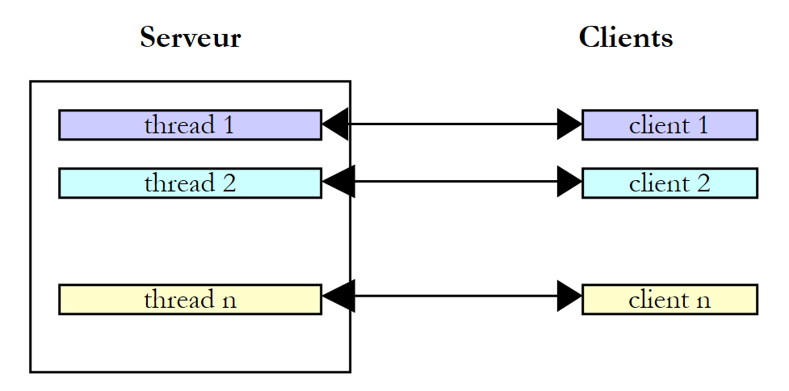
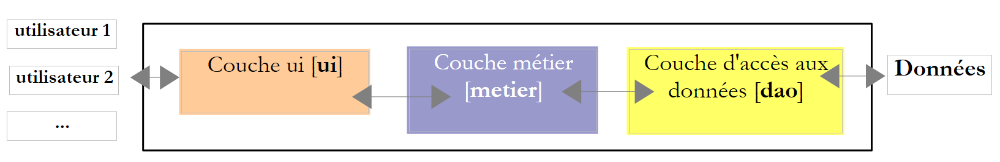

8. Les threads d'exécution
Ce chapitre présente l'exécution simultanée de plusieurs morceaux de code dans un même programme : les threads (fils d'exécution) et les outils qui permettent de les synchroniser. Il y a une vingtaine d'années, la plupart des machines n'avaient qu'un processeur et le parallélisme était surtout une illusion entretenue par le système d'exploitation. Aujourd'hui, le moindre ordinateur portable a plusieurs cœurs : plusieurs threads s'exécutent réellement en même temps, ce qui rend les problèmes de synchronisation étudiés ici encore plus présents.
Kotlin n'a pas de threads à lui sur la JVM : il utilise ceux de Java, qui les a intégrés dès sa première version (1996) avec la classe [Thread], le mot clé [synchronized] et les méthodes [wait] / [notify] de la classe [Object]. Java 5 (2004) a ajouté le paquetage [java.util.concurrent] et ses sous-paquetages [java.util.concurrent.locks] et [java.util.concurrent.atomic] : verrous, sémaphores, collections concurrentes, pools de threads… Java 7 y a ajouté le cadriciel [Fork/Join], Java 8 les flux parallèles, et Java 21 les threads virtuels, qui ont profondément changé la façon d'écrire les serveurs. Java 25 apporte enfin les valeurs liées à une portée ([ScopedValue]). Toutes ces classes du JDK sont directement utilisables en Kotlin : c'est l'un de ses grands atouts. La bibliothèque standard de Kotlin ajoute par-dessus quelques fonctions qui en rendent l'usage plus agréable : la fonction [thread] et la fonction d'extension [withLock] du paquetage [kotlin.concurrent], la fonction [synchronized], les annotations [@Volatile] et [@Synchronized]… Nous verrons tous ces outils dans ce chapitre.
Les threads ne sont cependant pas le dernier mot de Kotlin en matière de programmation concurrente : sa réponse propre à l'asynchronisme, ce sont les coroutines, présentées au chapitre 9. Elles reposent sur les threads, et tout ce que nous allons voir ici (sections critiques, visibilité des écritures, interblocage…) reste nécessaire pour bien les comprendre.
Les exemples sont dans le projet Gradle [08-threads]. Chaque programme est un fichier placé dans un paquetage à son nom ([threads01/Threads01.kt] dans le paquetage [threads01]…) et s'exécute par [gradlew -q run -Pmain=threads01.Threads01Kt], ou par le triangle vert d'IntelliJ IDEA. Les arguments éventuels du programme se passent à Gradle par l'option [--args] : [gradlew -q run -Pmain=threads08.Threads08Kt --args="5"].
Un avertissement avant de commencer : les résultats d'un programme multithread varient d'une exécution à l'autre. L'ordre dans lequel les threads obtiennent le processeur dépend du système d'exploitation, du nombre de processeurs et de la charge de la machine. Les résultats reproduits dans ce chapitre ont été obtenus sur une machine Linux à 2 processeurs, partagée avec d'autres programmes très actifs. Si vous exécutez les exemples, vous obtiendrez des résultats de même nature, mais rarement identiques. Nous indiquerons à chaque fois ce qui est reproductible et ce qui ne l'est pas.
8.1. La classe Thread
Lorsqu'on lance une application, elle s'exécute dans un flux d'exécution appelé un thread. La classe modélisant un thread est la classe [java.lang.Thread] du JDK. Rappelons que Kotlin présente les accesseurs Java [getXxx()] / [setXxx(…)] (et [isXxx()] pour un booléen) sous la forme de propriétés : on écrit [thread.name = "Main"] plutôt que [thread.setName("Main")]. Les principaux constructeurs, propriétés et méthodes de la classe sont les suivants :
Membre | Rôle |
[Thread(tâche: Runnable)], [Thread(tâche: Runnable, nom: String)] | crée un thread qui exécutera la méthode [run] de [tâche]. [Runnable] est l'interface Java [void run()] : grâce à la conversion SAM (chapitre 7), on lui passe une lambda [{ … }] ou une référence de fonction [::f] |
[thread(start, isDaemon, name, …) { … }] | (bibliothèque Kotlin, paquetage [kotlin.concurrent]) crée un thread qui exécute la lambda, le configure par des arguments nommés et, par défaut, le lance aussitôt |
[Thread.ofPlatform()], [Thread.ofVirtual()] | (Java 21) rendent un constructeur (« builder ») de threads de plate-forme ou de threads virtuels, que l'on configure (nom, démon…) avant de créer le thread |
[Thread.currentThread()] | le thread qui exécute le code ayant appelé cette méthode |
[name] | le nom du thread (propriété modifiable), utile pour le suivi |
[threadId()] | (Java 19) un identifiant numérique unique du thread, de type [Long] ; il remplace [getId()], dépréciée |
[isDaemon] | indique (fixe) si le thread est un thread démon (voir plus loin) |
[priority] | la priorité du thread, de 1 ([MIN_PRIORITY]) à 10 ([MAX_PRIORITY]), 5 ([NORM_PRIORITY]) par défaut |
[state], [isAlive] | l'état du thread ([NEW], [RUNNABLE], [BLOCKED], [WAITING], [TIMED_WAITING], [TERMINATED]) ; [isAlive] indique s'il a été lancé et n'est pas terminé (lecture seule) |
[isVirtual] | (Java 21) indique si le thread est un thread virtuel (lecture seule) |
[start()] | lance l'exécution du thread |
[join()], [join(délai: Duration): Boolean] | le thread T1 qui exécute [T2.join()] est bloqué jusqu'à ce que le thread T2 soit terminé. La seconde forme (Java 19) limite la durée de l'attente et indique si T2 est terminé |
[Thread.sleep(ms: Long)], [Thread.sleep(d: Duration)] | le thread qui exécute la méthode est suspendu pendant [ms] millisecondes (pendant la durée [d]). Il perd le processeur, qui est donné à un autre thread |
[interrupt()], [isInterrupted] | demande au thread de s'interrompre ; teste si une interruption a été demandée (voir plus loin) |
Les méthodes [join] et [sleep] lancent l'exception [InterruptedException] si le thread est interrompu pendant son attente. En Java, c'est une exception contrôlée, que le compilateur oblige à traiter ou à déclarer dans une clause [throws]. Kotlin n'a pas d'exceptions contrôlées (chapitre 3) : le compilateur n'oblige à rien. Cela ne dispense pas de réfléchir à ce que signifie cette exception : nous le verrons au paragraphe consacré à l'interruption.
La classe [Thread] a aussi une méthode [stop] qui terminait un thread de force. Elle est dépréciée depuis Java 1.2 et, depuis Java 20, elle ne fait plus que lancer l'exception [UnsupportedOperationException] : arrêter brutalement un thread pouvait laisser les données qu'il manipulait dans un état incohérent. On demande aujourd'hui à un thread de s'arrêter de façon coopérative, en l'interrompant : nous le verrons un peu plus loin.
Voici une première application mettant en évidence l'existence d'un thread principal d'exécution, celui qui exécute la fonction [main]. Le programme [Threads01.kt] est le suivant :
Résultats :
Commentaires :
- ligne 9 : on récupère une référence sur le thread qui exécute le programme ;
- lignes 11-14 : on affiche son nom, on le modifie (une simple affectation à la propriété [name], qui appelle la méthode Java [setName]), puis on l'affiche de nouveau. Au départ, le thread principal s'appelle [main] (ligne 1 des résultats) : c'est le lanceur Java qui lui a donné ce nom ;
- lignes 15-22 : quelques propriétés du thread. Dans cette exécution, le thread principal a l'identifiant 3 : la machine virtuelle crée quelques threads pour ses propres besoins avant d'exécuter [main], et cet identifiant peut varier d'une version de Java à l'autre. Ce n'est pas un thread démon ([isDaemon] vaut [false]) ni un thread virtuel (nous verrons ces deux notions plus loin) ; sa priorité est la priorité normale 5 ; il est en cours d'exécution ([RUNNABLE]). La méthode [toString] du thread, appelée par le gabarit ["$principal"] (ligne 21), affiche son identifiant, son nom, sa priorité et le nom de son groupe de threads ([main]) ;
- ligne 22 : la machine qui a exécuté l'exemple a 2 processeurs ;
- lignes 26-29 : une boucle qui fait un affichage toutes les secondes. [Thread.sleep(1000)] suspend le thread principal pendant une seconde. En Java, la fonction [main] devait déclarer l'exception contrôlée [InterruptedException] dans une clause [throws] ; en Kotlin, rien de tel. On notera le format [HH:mm:ss] (heures de 0 à 23) : le format [hh] afficherait les heures de 1 à 12.
8.2. Création de threads d'exécution
Il est possible d'avoir des applications où des morceaux de code s'exécutent de façon « simultanée » dans différents threads d'exécution. Si la machine a moins de processeurs que de threads prêts à s'exécuter, les threads se partagent les processeurs : ils en disposent, chacun leur tour, pendant un court instant (quelques millisecondes). Sur une machine à plusieurs processeurs, plusieurs threads s'exécutent réellement en même temps. La portion de temps accordée à un thread dépend de divers facteurs, dont sa priorité, qui a une valeur par défaut mais peut être fixée par programmation (propriété [priority]) ; c'est une simple indication, que le système d'exploitation est libre d'ignorer (Linux l'ignore par défaut). Un thread qui dispose du processeur peut le libérer avant terme :
- en se mettant en attente d'un événement (fin d'un autre thread avec [join], attente d'un signal) ;
- en se mettant en sommeil pendant un temps déterminé ([sleep]).
Un thread T est d'abord créé, par exemple par le constructeur [Thread(tâche, nom)], où [tâche] est un objet implémentant l'interface Java [Runnable], dont l'unique méthode est [void run()]. Grâce à la conversion SAM présentée au chapitre 7, on passe à la place d'un [Runnable] une lambda ou une référence de fonction de type [() -> Unit]. On rencontre aussi, dans du code ancien, des classes dérivées de [Thread] qui redéfinissent sa méthode [run] : c'est déconseillé, car cela mélange le travail à faire et le moyen de l'exécuter.
La création d'un thread ne lance pas celui-ci :
- l'exécution du thread T est lancée par [T.start()] : la méthode [run] de la tâche passée au constructeur de T va alors être exécutée par le thread T. Le code qui exécute l'instruction [T.start()] n'attend pas la fin du thread T : il passe aussitôt à l'instruction suivante. On a alors deux threads qui s'exécutent en parallèle. Ils doivent souvent pouvoir communiquer entre eux pour savoir où en est le travail commun à réaliser : c'est le problème de la synchronisation des threads ;
- une fois lancé, le thread T s'exécute de façon autonome. Il s'arrête lorsque la fonction qu'il exécute est terminée ;
- on peut attendre la fin de son exécution par [T.join()]. C'est une instruction bloquante : le thread qui l'exécute est bloqué jusqu'à ce que le thread T ait terminé son travail. C'est un premier moyen de synchronisation.
Le programme [Threads02.kt] est le suivant :
Commentaires :
- ligne 9 : on donne un nom au thread principal ;
- lignes 12-14 : on crée 5 threads. La fonction [Array(5) { i -> … }] crée un tableau de 5 éléments, dont l'élément n° i est la valeur rendue par la lambda. Les références des threads sont ainsi mémorisées dans un tableau afin de pouvoir les retrouver ultérieurement. Chaque thread exécute la fonction [affiche] des lignes 26-33 ;
- ligne 14 : la référence de fonction [::affiche], de type [() -> Unit], est convertie automatiquement en un objet [Runnable] : la fonction [affiche] n'a pas de paramètre et ne rend pas de résultat, comme [run]. En Java, dans un fichier source compact, il fallait écrire [this::affiche] ; en Kotlin, [affiche] est une fonction de haut niveau, que l'on désigne simplement par [::affiche]. Le second paramètre du constructeur est le nom du thread ;
- lignes 17-18 : les threads sont lancés. Cette opération n'est pas bloquante : le thread n° i s'exécute en parallèle du thread principal qui l'a lancé ;
- ligne 22 : le thread principal arrive à la fin du programme ;
- lignes 26-33 : la fonction [affiche] affiche le nom et l'identifiant du thread qui l'exécute ainsi que les heures (à la milliseconde près) de début et de fin d'exécution ;
- ligne 32 : tout thread exécutant la fonction [affiche] s'arrête pendant 1 seconde. Le processeur est alors donné à un autre thread en attente de processeur. À la fin de la seconde d'arrêt, le thread arrêté redevient candidat au processeur. Il l'obtiendra lorsque son tour sera venu ;
- lignes 37-42 : la fonction [dormir] enveloppe [Thread.sleep]. Le compilateur Kotlin n'oblige pas à intercepter l'exception [InterruptedException] que peut lancer [sleep]. Mais si on la laissait échapper de la fonction exécutée par un thread, elle terminerait ce thread avec un message d'erreur sur la console. La fonction [dormir] l'intercepte donc et rétablit l'indicateur d'interruption du thread (ligne 42) ; nous expliquerons ce geste au paragraphe sur l'interruption. Le nom [_] donné au paramètre de la clause [catch] indique que ce paramètre n'est pas utilisé. Nous retrouverons cette petite fonction dans la plupart des programmes du chapitre ;
- ligne 47 : la fonction [heure], écrite sous la forme d'une expression ([= …]), rend l'heure courante au format [HH:mm:ss.SSS] ([SSS] : les millisecondes).
Résultats :
Ces résultats sont très instructifs :
- on voit tout d'abord que le lancement d'un thread n'est pas bloquant. Le thread principal a lancé 5 threads et a atteint la fin du programme (ligne 5) alors que le thread 2 n'avait pas encore affiché son premier message ;
- l'ordre d'exécution des threads est imprévisible : dans cette exécution, les threads 3 et 4 ont affiché leur message de début avant le thread 0. Le système d'exploitation a ici 6 threads et 2 processeurs ; il distribue les processeurs à ces threads selon des règles qui lui sont propres ;
- on remarque aussi que l'ordre des affichages ne suit pas toujours l'ordre des heures affichées : le thread principal a affiché sa fin à 14.490, après des messages datés de 14.491 et 14.492. L'heure est calculée avant l'affichage, et entre les deux, un autre thread a pu écrire sur la console. [println] (qui appelle [System.out.println]) est sûre vis-à-vis des threads : deux lignes écrites par deux threads ne se mélangent pas, mais leur ordre n'est pas garanti ;
- les identifiants des threads créés (21 à 25) montrent que la machine virtuelle avait déjà créé une vingtaine de threads pour ses propres besoins (ramasse-miettes, compilateur à la volée…) ;
- chaque thread s'arrête une seconde avec [sleep], puis termine l'exécution de la fonction [affiche] ;
- enfin, le programme ne s'est pas arrêté quand le thread principal a terminé son travail : la machine virtuelle a attendu la fin des 5 threads. C'est le cas parce que ces threads ne sont pas des threads démons : la machine virtuelle Java s'arrête lorsque tous ses threads non démons sont terminés.
Un thread peut au contraire être déclaré démon (« daemon thread »), en passant sa propriété [isDaemon] à [true] avant de le lancer. Les threads démons sont des threads de service, qui n'empêchent pas la machine virtuelle de s'arrêter : lorsque le dernier thread non démon se termine, ils sont arrêtés. Le programme [Threads03.kt] en crée avec la fonction [thread] de la bibliothèque Kotlin :
Commentaires :
- ligne 6 : la fonction [thread] appartient au paquetage [kotlin.concurrent] de la bibliothèque standard ; elle doit être importée ;
- lignes 13-16 : la fonction [thread(…) { … }] crée un thread qui exécutera la lambda placée après les parenthèses (la syntaxe de la « lambda finale », chapitre 7). Ses autres paramètres ont tous une valeur par défaut ; on fixe ceux dont on a besoin par des arguments nommés : ici [isDaemon = true] et [name = "$i"]. Sa signature est la suivante : [fun thread(start: Boolean = true, isDaemon: Boolean = false, contextClassLoader: ClassLoader? = null, name: String? = null, priority: Int = -1, block: () -> Unit): Thread]. Par défaut ([start = true]), le thread est lancé aussitôt ; la fonction rend le thread créé. Elle remplace avantageusement la séquence Java [var t = new Thread(…); t.setDaemon(true); t.start();]. L'intervalle [0..<5] (les entiers de 0 à 4) est le même que [0 until 5] ;
- ligne 21 : le thread principal attend 100 ms pour laisser aux threads le temps de démarrer, puis il se termine.
Résultats :
Les 5 threads ont commencé leur exécution, puis le thread principal s'est terminé (ligne 6). On remarque que son message, daté de 15.819, est affiché après des messages datés de 15.827 à 15.833 : il avait calculé l'heure avant que les autres threads n'écrivent. Les threads démons ont alors été arrêtés pendant leur seconde de sommeil : aucun message de fin n'est affiché. Sur une machine très chargée, certains threads n'ont même pas le temps d'afficher leur message de début, 100 ms ne leur suffisant pas pour obtenir le processeur : une autre exécution peut donc donner un autre nombre de messages de début, mais jamais de message de fin. On obtient le même effet en terminant [main] par [exitProcess(0)] (paquetage [kotlin.system], qui appelle [System.exit(0)]), qui arrête la machine virtuelle, donc tous les threads de l'application, démons ou pas. Les threads virtuels, que nous verrons plus loin, sont toujours des threads démons.
Si le thread principal veut attendre la fin des threads qu'il a créés, il utilise la méthode [join]. Le programme [Threads04.kt] montre également comment faire exécuter par un thread une fonction ayant des paramètres :
Commentaires :
- lignes 13-15 : la fonction [map] transforme l'intervalle [0..<5] en une liste de 5 threads, créés et lancés par la fonction [thread]. [taches] est de type [List<Thread>] ;
- ligne 15 : le thread exécute la lambda [{ affiche(i, 1000L + 100 * i) }]. Cette écriture permet d'appeler une fonction ayant des paramètres typés (ici un [Int] et un [Long]), alors que [run] n'en a aucun ;
- la lambda utilise directement le paramètre [i] de la lambda de [map]. En Java, elle devait utiliser une copie de la variable de boucle ([int numero = i;]), car une lambda Java ne peut utiliser que des variables locales effectivement finales, et la variable de boucle [i] d'un [for (int i = 0; …; i++)] est modifiée. En Kotlin, la question ne se pose pas ici : [i] est un paramètre, donc non modifiable, et il en va de même de la variable d'une boucle [for (i in 0..<5)], qui est une nouvelle variable [val] à chaque itération. Kotlin permet d'ailleurs à une lambda de capturer une variable [var] et de la modifier (chapitre 7) ; mais une variable [var] partagée entre plusieurs threads pose les problèmes d'accès concurrents que nous étudierons plus loin. Le piège évité est classique : un thread qui démarre tardivement ne doit pas lire la valeur de [i] d'une itération suivante ;
- lignes 19-21 : le thread principal attend chacun des threads. Il est d'abord bloqué en attente du thread 0, puis du thread 1, etc. Lorsqu'il sort de la boucle, les 5 threads qu'il a lancés sont terminés ;
- ligne 32 : la tâche n° i dort 1 000 + 100 × i millisecondes, afin que les threads se terminent dans un ordre connu.
Résultats :
Les messages de début apparaissent dans un ordre quelconque, mais les messages de fin dans l'ordre des numéros, puisque les durées de sommeil sont croissantes : cette partie du résultat est reproductible. La dernière ligne montre que le thread principal s'est terminé après les threads qu'il avait lancés, au moment où le dernier d'entre eux s'est terminé.
8.3. Arrêter un thread : l'interruption
Comment arrêter un thread avant la fin de son travail, par exemple lorsque l'utilisateur annule une opération longue ? La JVM ne permet pas de tuer un thread ; elle propose un mécanisme coopératif, l'interruption :
- chaque thread possède un indicateur d'interruption, un booléen initialement à [false] ;
- un thread T1 qui veut arrêter le thread T2 appelle [T2.interrupt()]. Cela positionne l'indicateur d'interruption de T2. C'est une demande d'arrêt : T2 n'est pas arrêté, c'est à lui de décider quand et comment s'arrêter, de façon à laisser ses données dans un état cohérent ;
- si T2 est bloqué dans une méthode d'attente ([sleep], [join], [wait], et la plupart des méthodes bloquantes de [java.util.concurrent]), il est réveillé : la méthode lance l'exception [InterruptedException] et l'indicateur d'interruption est remis à [false] ;
- si T2 calcule, sans jamais attendre, il doit consulter lui-même son indicateur avec [Thread.currentThread().isInterrupted], à intervalles réguliers.
En Java, les méthodes bloquantes déclarent l'exception contrôlée [InterruptedException] : le compilateur oblige le programmeur à décider de ce qu'il fera d'une demande d'arrêt. Kotlin ne l'y oblige pas, mais la décision reste à prendre, et elle est la même. Deux réponses sont correctes : laisser l'exception remonter à l'appelant, ou l'intercepter et terminer proprement le travail. Lorsqu'on ne peut faire ni l'un ni l'autre, comme dans la fonction [dormir] du programme [Threads02.kt], on rétablit l'indicateur par [Thread.currentThread().interrupt()], pour que le code appelant puisse encore voir la demande. La seule réponse incorrecte est d'ignorer l'exception. Le programme [Threads05.kt] montre les trois cas :
Commentaires :
- lignes 10-21 : le thread [dormeur] est créé et lancé par un constructeur de threads de plate-forme, [Thread.ofPlatform().name("dormeur")], dont la méthode [start] reçoit la lambda à exécuter (nous présenterons ces constructeurs avec le programme [Threads06.kt]). Il passe l'essentiel de son temps dans [Thread.sleep]. La boucle [while (true)] n'a pas de condition d'arrêt : c'est l'exception [InterruptedException], lancée par [sleep] lorsque le thread est interrompu, qui fait sortir de la boucle (ligne 19). La lambda est une instruction [try] qui englobe tout le travail du thread : à la réception de l'exception, le thread affiche un message puis se termine ;
- lignes 25-31 : le thread [calculateur] ne fait jamais d'attente. Il consulte son indicateur d'interruption à chaque tour de boucle (ligne 28). La méthode Java [isInterrupted()] est vue par Kotlin comme une propriété booléenne [isInterrupted]. Le nombre d'itérations est affiché par la fonction [format] des chaînes de Kotlin, qui utilise les formats de [String.format] : [%,d] affiche un entier avec le séparateur des milliers de la langue courante ;
- lignes 34-40 : le thread [sourd] intercepte [InterruptedException] et continue comme si de rien n'était. La demande d'arrêt est perdue : c'est l'erreur à ne pas commettre. C'est un thread démon ([daemon()]), pour que le programme puisse se terminer sans l'attendre ;
- ligne 46 : le thread principal laisse travailler les threads pendant une seconde ;
- lignes 48-50 : il demande l'arrêt des trois threads ;
- lignes 52-54 : il attend la fin de chaque thread pendant au plus une seconde. La méthode [join(Duration)] (Java 19) rend [true] si le thread s'est terminé pendant ce délai, [false] sinon. [Duration.ofSeconds(1)] représente une durée d'une seconde (classe [java.time.Duration]).
Résultats :
Les threads [dormeur] et [calculateur] se sont arrêtés quelques millisecondes après la demande ; le thread [sourd] l'a ignorée et ne s'était toujours pas terminé une seconde plus tard ([false], dernière ligne). Le nombre d'itérations du calculateur varie beaucoup d'une exécution à l'autre, selon la part de processeur qu'il a obtenue ; le reste du résultat est reproductible, à l'ordre près des lignes 4 à 6.
L'interruption est le mécanisme d'arrêt de toute la bibliothèque Java : nous verrons plus loin que la méthode [cancel] d'une tâche ([Future]) et la fermeture brutale d'un pool de threads ([shutdownNow]) interrompent les threads concernés. Les coroutines du chapitre 9 ont leur propre mécanisme, l'annulation, coopératif lui aussi, et d'autres façons d'arrêter un traitement, comme les délais d'expiration.
8.4. Les threads virtuels
Les threads que nous avons créés jusqu'ici sont des threads de plate-forme : chacun d'eux est une enveloppe autour d'un thread du système d'exploitation, qu'il occupe pendant toute sa vie. Un thread du système est une ressource coûteuse : sa création prend du temps, sa pile réserve de la mémoire (de l'ordre du mégaoctet), et le système ne sait pas en gérer efficacement plus de quelques milliers. Or un serveur qui consacre un thread à chaque client (voir le schéma du paragraphe suivant) passe l'essentiel de son temps à attendre : la réponse d'une base de données, la requête suivante du client… Pendant ces attentes, le thread du système est bloqué et inutilisable.
Java 21 a introduit les threads virtuels (« virtual threads », JEP 444), utilisables tels quels en Kotlin. Un thread virtuel est un objet [Thread] comme un autre, mais il est géré par la machine virtuelle Java et non par le système d'exploitation :
- pour s'exécuter, un thread virtuel est monté sur un thread de plate-forme, appelé son thread porteur (« carrier thread »). Les threads porteurs forment un petit pool, dont la taille est par défaut le nombre de processeurs ;
- lorsqu'un thread virtuel se bloque ([sleep], attente d'une entrée / sortie réseau, d'un verrou, d'une file bloquante…), il est démonté : sa pile est mise de côté dans la mémoire de la machine virtuelle, et le thread porteur est aussitôt disponible pour un autre thread virtuel. Lorsque l'attente se termine, le thread virtuel est remonté sur un thread porteur, pas forcément le même ;
- un thread virtuel coûte quelques centaines d'octets : on peut en créer des millions.
Les coroutines de Kotlin (chapitre 9) reposent sur une idée voisine — suspendre un traitement qui attend sans bloquer de thread du système — mais réalisée par le compilateur Kotlin et non par la machine virtuelle. Nous comparerons les deux approches au chapitre 9.
Le programme [Threads06.kt] compare le lancement de 10 000 threads de plate-forme et de 10 000 threads virtuels qui dorment chacun une seconde :
Commentaires :
- lignes 7-8 : la fonction [mesurer] est appelée deux fois, avec un constructeur de threads de plate-forme ([Thread.ofPlatform()]) puis avec un constructeur de threads virtuels ([Thread.ofVirtual()]). Les deux constructeurs ont le type commun [Thread.Builder] : le reste du code est identique. Un constructeur se configure par des appels chaînés : [name("virtuel")] fixe le nom du thread, [name("", 0)] demanderait des threads nommés par un préfixe suivi d'un numéro croissant à partir de 0, [daemon()] (threads de plate-forme seulement) demande des threads démons. Sa méthode [start(Runnable)] crée un thread et le lance aussitôt ; sa méthode [unstarted(Runnable)] le crée sans le lancer ;
- lignes 21-26 : la fonction [mesurer] lance [nbThreads] threads qui dorment une seconde, attend leur fin et affiche la durée totale. La fonction [List(n) { … }] construit la liste des threads, créés et lancés par [constructeur.start { … }] (une lambda convertie en [Runnable]). La méthode [System.nanoTime()] rend un temps en nanosecondes, qui ne sert qu'à mesurer des durées ;
- lignes 11-14 : un thread virtuel nommé [virtuel] affiche sa représentation textuelle avant et après un sommeil ;
- ligne 17 : un thread virtuel est toujours un thread démon.
Résultats :
- 10 000 threads de plate-forme ont mis plusieurs secondes à faire ce qui aurait dû prendre une seconde : la création des threads du système et la gestion de leurs piles ont coûté cher. Avec 100 000 threads, le programme échouerait probablement, faute de mémoire ou de threads disponibles dans le système ;
- 10 000 threads virtuels ont fait le même travail en à peine plus d'une seconde : pendant leur sommeil, ils n'occupaient aucun thread du système. Les durées exactes varient d'une exécution à l'autre, mais l'écart entre les deux sortes de threads est reproductible ;
- la représentation textuelle d'un thread virtuel ([VirtualThread[#…,virtuel]]) indique, après le caractère [@], le thread porteur sur lequel il est monté : un thread du pool [ForkJoinPool-1], que nous retrouverons plus loin. Dans cette exécution, le thread virtuel s'est endormi sur le porteur [worker-2] et a repris son exécution sur le porteur [worker-1] : il a bien été démonté puis remonté sur un autre porteur (cela dépend de l'exécution).
Les threads virtuels ne rendent pas les calculs plus rapides : un calcul qui occupe le processeur sans jamais attendre ne va pas plus vite dans un thread virtuel que dans un thread de plate-forme, et le nombre de calculs simultanés reste limité par le nombre de processeurs. Leur intérêt est de pouvoir consacrer, sans compter, un thread à chaque travail qui passe l'essentiel de son temps à attendre : c'est le cas des serveurs, du paragraphe suivant et des chapitres 12 et 13. Tout ce que nous allons voir sur la synchronisation des threads s'applique aussi bien aux threads virtuels qu'aux threads de plate-forme.
8.5. Intérêt des threads
Maintenant que nous avons mis en évidence l'existence d'un thread par défaut, celui qui exécute la fonction [main], et que nous savons comment en créer d'autres, arrêtons-nous sur l'intérêt des threads. Ils ont deux usages principaux :
- utiliser tous les processeurs de la machine pour un calcul long : on découpe le travail en morceaux confiés à des threads différents. Nous le ferons avec les flux parallèles et le cadriciel [Fork/Join] à la fin de ce chapitre ;
- faire plusieurs choses à la fois, en particulier lorsque certaines d'entre elles consistent surtout à attendre (une réponse du réseau, une lecture sur disque, une saisie de l'utilisateur). C'est le cas des applications client / serveur de l'internet que nous présenterons au chapitre 12.
Dans une application client / serveur de l'internet, un serveur situé sur une machine S1 répond aux demandes de clients situés sur des machines distantes C1, C2, …, Cn :

Nous utilisons tous les jours des applications de l'internet correspondant à ce schéma : services web, messagerie électronique, transfert de fichiers… Dans le schéma ci-dessus, le serveur S1 doit servir les clients Ci de façon simultanée. Si nous prenons l'exemple d'un serveur de fichiers, nous savons qu'un transfert peut parfois prendre plusieurs minutes. Il est hors de question qu'un client monopolise tout seul le serveur pendant une telle durée. Une solution classique est que le serveur crée autant de threads d'exécution qu'il y a de clients. Chaque thread est alors chargé de s'occuper d'un client particulier :

Avec des threads de plate-forme, le serveur utilise en pratique un pool de threads, présenté plus loin, dont le nombre limité de threads borne le nombre de clients servis simultanément. Avec les threads virtuels, le schéma ci-dessus redevient la bonne solution : un thread virtuel par client, même s'il y a des dizaines de milliers de clients, puisqu'un client qui attend n'occupe aucun thread du système. C'est ce que permettent aujourd'hui les serveurs web de la JVM, comme Tomcat, que nous utiliserons au chapitre 13. En Kotlin, les coroutines du chapitre 9 offrent une autre solution à ce même problème : une coroutine par client.
8.6. Échange d'informations entre threads
Dans les exemples précédents, les threads exécutaient une fonction sans paramètre, ou une lambda qui appelait une fonction avec des paramètres. La méthode [run] de [Runnable] n'ayant ni paramètre ni résultat, c'est la lambda qui transmet de l'information au thread lancé : elle capture les variables dont elle a besoin. Si la variable capturée désigne un objet, le thread lancé peut aussi y déposer des résultats que le thread lanceur lira. Le programme [Threads07.kt] est le suivant :
Commentaires :
- lignes 10-16 : l'information échangée avec chaque thread est un objet [Donnees]. Il y a là un échange d'informations dans les deux sens entre le thread lanceur et le thread lancé. [debut] et [duree] sont des propriétés [val] déclarées dans le constructeur primaire : elles sont fixées une fois pour toutes à la construction de l'objet :
- [debut] : heure de début d'exécution du thread, fixée par le thread lanceur ;
- [duree] : durée en secondes du sommeil du thread lancé, fixée par le thread lanceur ;
- [fin] : heure de fin d'exécution du thread, fixée par le thread lancé. C'est une propriété [lateinit var] (chapitre 4) : elle n'a pas de valeur à la construction de l'objet, mais n'est pas pour autant de type [LocalTime?]. La lire avant qu'elle ait été affectée lancerait l'exception [UninitializedPropertyAccessException]. La classe Java correspondante faisait près de trente lignes, avec ses accesseurs ;
- lignes 28-29 : un objet [Donnees] est créé et ajouté à la liste [donnees] ;
- ligne 31 : la lambda [{ dormir(d) }] capture la variable [d] : le thread lancé exécutera la fonction [dormir] des lignes 49-57 avec l'objet [d] comme paramètre. L'opérateur [+=] ajoute le thread rendu par la fonction [thread] à la liste modifiable [taches] ;
- lignes 36-42 : le thread principal attend la fin de chacun des threads qu'il a lancés, puis récupère l'objet [Donnees] du thread et en affiche le contenu. La fonction [zip] associe les deux listes en une liste de paires ([Pair<Thread, Donnees>]), que la boucle [for] déstructure en [(tache, d)]. La durée effective est calculée par [Duration.between(début, fin)] ;
- ligne 52 : la propriété [duree] du paramètre fixe la durée du sommeil ;
- ligne 57 : la propriété [fin] du paramètre est renseignée.
Résultats :
Cet exemple montre que deux threads peuvent échanger de l'information :
- le thread lanceur peut contrôler l'exécution du thread lancé en lui donnant des informations ;
- le thread lancé peut rendre des résultats au thread lanceur.
Pour que le thread lanceur sache à quel moment les résultats qu'il attend sont disponibles, il faut qu'il soit averti de la fin du thread lancé. Ici, il a attendu sa fin avec la méthode [join]. Ce n'est pas qu'une question de moment : nous verrons au paragraphe consacré à l'annotation [@Volatile] qu'une écriture faite par un thread n'est pas forcément visible par un autre. Le modèle mémoire de Java, qui s'applique à tout programme exécuté par la JVM, donc aux programmes Kotlin, garantit que tout ce qu'a écrit un thread est visible par le thread qui a attendu sa fin avec [join], et que tout ce qu'a écrit le thread lanceur avant [start] est visible par le thread lancé. Nous verrons d'autres façons de se synchroniser dans la suite.
Au lieu d'une lambda, on pourrait écrire une classe qui implémente [Runnable] et dont les propriétés contiennent les informations échangées. La lambda est plus concise ; c'est l'écriture la plus courante aujourd'hui. Pour récupérer le résultat d'un traitement, nous verrons aussi plus loin l'interface [Callable<V>], dont la méthode [call()] rend un résultat, et, au chapitre 9, la fonction [async] des coroutines, qui rend un résultat différé ([Deferred]).
8.7. Accès concurrents à des ressources partagées
8.7.1. Accès concurrents non synchronisés
Dans le paragraphe précédent, l'information n'était échangée que par deux threads et à des moments bien précis : on avait là un classique passage de paramètres. Il existe d'autres cas où une information est partagée par plusieurs threads qui peuvent vouloir la lire ou la mettre à jour au même moment. Se pose alors le problème de l'intégrité de cette information. Supposons que l'information partagée soit une structure S avec diverses informations I1, I2, …, In :
- un thread T1 commence à mettre à jour la structure S : il modifie le champ I1 et est interrompu avant d'avoir terminé la mise à jour complète de la structure S ;
- un thread T2 qui récupère le processeur lit alors la structure S pour prendre des décisions. Il lit une structure dans un état instable : certains champs sont à jour, d'autres pas.
On appelle cette situation l'accès concurrent à une ressource partagée, ici la structure S. Elle est souvent délicate à gérer. Prenons l'exemple suivant pour illustrer les problèmes qui peuvent surgir :
- une application va générer n threads, n étant passé en paramètre ;
- la ressource partagée est un compteur qui doit être incrémenté par chaque thread généré ;
- à la fin de l'application, la valeur du compteur est affichée. On devrait donc trouver n.
Le programme [Threads08.kt] est le suivant :
Commentaires :
- lignes 9-24 : la ressource partagée est la propriété [valeur] de l'objet singleton [Compteur] (déclaration [object], chapitre 4). Le compteur est encapsulé dans cet objet, avec la fonction [incrementer] exécutée par chaque thread. Le mot clé [private set] (ligne 12) rend la propriété lisible de partout, mais modifiable seulement dans l'objet : c'est l'équivalent du champ privé et de son accesseur [getValeur] de la version Java ;
- ligne 18 : le compteur est lu ;
- ligne 21 : le thread s'arrête 1 s. Il perd donc le processeur ;
- ligne 23 : le compteur est incrémenté ;
- lignes 30-34 : le nombre de threads est passé en argument. L'expression [args.singleOrNull()?.toIntOrNull() ?: -1] rend l'entier contenu dans l'unique argument du programme, ou -1 s'il n'y a pas exactement un argument ([singleOrNull] rend alors [null]) ou si cet argument n'est pas un entier ([toIntOrNull] rend alors [null]). La condition [nbThreads !in 1..nbMaxThreads] rejette donc aussi bien un argument absent ou invalide qu'un nombre hors de l'intervalle [1, 100]. En Java, il avait fallu écrire une méthode qui intercepte [NumberFormatException]. En cas d'erreur, le programme écrit un message sur la sortie d'erreur ([System.err]) et se termine avec le code de sortie 1 ([exitProcess(1)], du paquetage [kotlin.system]) ;
- ligne 38 : chaque thread exécute la fonction [incrementer] de l'objet [Compteur], désignée par la référence liée [Compteur::incrementer] ;
- lignes 39-41 : les threads sont lancés, puis le thread principal attend leur fin.
L'arrêt d'une seconde n'est là que pour forcer le thread à perdre le processeur entre la lecture et l'écriture du compteur. Dans la pratique, rien n'assure qu'un thread ne sera pas interrompu entre ces deux moments, et sur une machine multiprocesseur, deux threads peuvent même lire le compteur exactement au même moment. Le sommeil d'une seconde ne fait que systématiser ce risque.
Avec Gradle, les arguments du programme se passent par l'option [--args]. Sans argument, on obtient le message d'erreur (la commande [echo $?] du shell Linux affiche le code de sortie du dernier programme exécuté ; sous Windows, c'est [echo %errorlevel%]). Pour que ce soit bien le code de sortie du programme qui soit affiché, et non celui de Gradle (qui signale aussi l'échec de la tâche [run]), on a ici exécuté directement la classe compilée, avec la commande [java] :
Avec 5 threads :
À la lecture de ces résultats, on voit bien ce qui se passe :
- un premier thread lit le compteur. Il trouve 0. Il s'arrête 1 s et perd donc le processeur ;
- un second thread lit lui aussi la valeur du compteur. Elle est toujours à 0 puisque le thread précédent ne l'a pas encore incrémentée. Il s'arrête lui aussi 1 s ;
- en moins d'une seconde, les 5 threads ont le temps de lire tous la valeur 0 ;
- lorsqu'ils se réveillent, ils incrémentent la valeur 0 qu'ils ont lue et écrivent tous la valeur 1 dans le compteur, ce que confirme la dernière ligne (ligne 11). Ce résultat faux est reproductible : seul l'ordre des threads change d'une exécution à l'autre.
On peut objecter que l'exemple est artificiel. Supprimons donc le sommeil et utilisons l'opérateur [++] qui donne l'illusion d'une instruction unique. Le programme [Threads09.kt] est le suivant :
Commentaires :
- lignes 11-12 : le nombre de threads (4 par défaut) et le nombre d'incrémentations faites par chaque thread (50 millions par défaut) peuvent être passés en arguments. [args.getOrNull(0)] rend le premier argument, ou [null] s'il n'existe pas : l'opérateur Elvis [?:] fournit alors la valeur par défaut. Le séparateur [_] rend lisible la constante [50_000_000] ;
- ligne 19 : les threads sont créés et lancés par [Thread.ofPlatform().start { … }] ; ils n'ont pas besoin de nom. La fonction [List(nbThreads) { … }] rassemble les threads créés dans une liste ;
- ligne 22 : chaque thread incrémente le compteur partagé, sans aucune pause ;
- lignes 30-31 : dans la chaîne de format, [%,d] affiche un nombre entier avec le séparateur des milliers de la langue courante (ici le français : une espace fine insécable).
Résultats :
Des dizaines de millions de mises à jour ont été perdues lors du premier essai. L'opération de haut niveau [Compteur.valeur++] est en effet traduite en plusieurs instructions élémentaires du processeur : lire la valeur en mémoire, l'incrémenter dans un registre, écrire le résultat en mémoire. Si deux threads lisent la même valeur avant que l'un d'eux n'ait écrit la sienne, une incrémentation est perdue, exactement comme dans l'exemple précédent.
Les essais 2 et 3 méritent une explication : ils ont donné la valeur exacte. L'explication la plus probable est la suivante : au bout d'un certain temps d'exécution, le compilateur à la volée (JIT) de la machine virtuelle a optimisé la boucle [repeat(nbIncrements) { … }] (une fonction [inline], que le compilateur Kotlin a remplacée par une simple boucle) : il a jugé qu'aucun autre thread n'était censé voir le compteur pendant la boucle (rien dans le code ne le demande) et a placé le compteur dans un registre du processeur. Chaque thread lit alors le compteur une seule fois, lui ajoute 50 millions dans son registre et l'écrit une seule fois à la fin. Si les travaux des threads ne se chevauchent pas, ce qui a été le cas ici, le résultat est juste ; si au contraire les quatre threads lisent la valeur 0 avant que l'un d'eux n'ait écrit, trois résultats sur quatre sont perdus, soit 150 millions de mises à jour d'un coup. Dans cette exécution, seul le premier essai, exécuté en grande partie avant cette optimisation, a perdu des mises à jour ; dans d'autres exécutions, les essais 2 et 3 peuvent en perdre aussi, parfois 150 millions d'un coup. C'est ce qui rend ces erreurs redoutables : un programme peut fonctionner pendant des mois et se tromper le jour où la machine est plus chargée, ou plus rapide.
D'où vient le problème ? Un thread a lu une valeur périmée parce qu'un autre avait été interrompu, ou travaillait en même temps sur un autre processeur, avant d'avoir terminé son travail qui était de mettre à jour le compteur. Cela nous amène aux notions de ressource critique et de section critique d'un programme :
- une ressource critique est une ressource qui ne peut être détenue que par un thread à la fois. Ici, la ressource critique est le compteur ;
- une section critique d'un programme est une séquence d'instructions du flux d'exécution d'un thread au cours de laquelle il accède à une ressource critique. On doit assurer qu'au cours de cette section critique, il est le seul à avoir accès à la ressource.
Dans le programme [Threads08.kt], la section critique est le code situé entre la lecture du compteur et l'écriture de sa nouvelle valeur :
Pour exécuter ce code, un thread doit être assuré d'être seul. Il peut être interrompu, mais pendant cette interruption, un autre thread ne doit pas pouvoir exécuter ce même code. La JVM offre divers outils pour assurer l'entrée unitaire dans les sections critiques de code, et Kotlin quelques fonctions pour les utiliser plus commodément. Nous en voyons quelques-uns maintenant.
8.7.2. La fonction synchronized et l'annotation @Synchronized
En Java, le bloc [synchronized] délimite une section critique de la façon suivante : [synchronized (verrou) { …section critique… }]. [verrou] est un objet visible par tous les threads exécutant la section critique. Sur la JVM, tout objet possède un verrou interne, appelé aussi moniteur. Le bloc [synchronized] assure qu'un seul thread à la fois détient le moniteur de l'objet [verrou], donc qu'un seul thread à la fois exécute la section critique : un thread qui arrive devant un moniteur détenu par un autre thread est bloqué jusqu'à ce que le moniteur soit libéré. Le moniteur est libéré à la sortie du bloc, que celle-ci soit normale ou due à une exception.
Kotlin n'a pas de mot clé [synchronized]. Sa bibliothèque standard propose à la place une fonction [synchronized], dont la signature est [inline fun <R> synchronized(lock: Any, block: () -> R): R]. Grâce à la syntaxe de la lambda finale, son appel [synchronized(verrou) { …section critique… }] s'écrit exactement comme le bloc Java. Comme la fonction est [inline], le compilateur Kotlin remplace l'appel par le corps de la lambda, encadré des mêmes instructions de la JVM que le bloc Java ([monitorenter] / [monitorexit]) : il n'y a aucune différence d'exécution. La fonction rend la valeur de la lambda, ce qui permet d'écrire [val v = synchronized(verrou) { compteur }].
L'exemple précédent est réécrit comme suit dans [Threads10.kt] :
Commentaires :
- ligne 13 : [verrou] est l'objet qui va permettre la synchronisation de tous les threads. Il ne sert qu'à cela : c'est un simple objet de la classe [Any], la racine des classes Kotlin (l'équivalent de [Object]). C'est une propriété [val] : la référence ne doit jamais changer, sinon deux threads pourraient verrouiller deux objets différents. Elle est privée : aucun code extérieur à l'objet [Compteur] ne peut prendre ce verrou ;
- ligne 11 : le compteur est désormais une propriété privée ; il n'est accessible de l'extérieur qu'au travers de la propriété [valeur] ;
- lignes 16-17 : la propriété [valeur] n'a pas de champ : son accesseur [get] lit le compteur sous la protection du verrou, et rend la valeur rendue par la fonction [synchronized], celle de la lambda [{ compteur }]. Ici, ce n'est pas indispensable, puisque le thread principal a attendu la fin des threads avec [join] ; mais c'est la bonne habitude : une donnée protégée par un verrou doit être lue et écrite sous la protection de ce verrou ;
- lignes 24-32 : la section critique de la fonction [incrementer] est encadrée par l'appel de la fonction [synchronized]. Le thread garde le verrou pendant son sommeil d'une seconde : les autres threads ne peuvent pas entrer ;
- lignes 52-55 : le thread principal attend les threads dans l'ordre inverse de leur création. La fonction [asReversed] rend une vue de la liste parcourue à l'envers, sans la copier.
Résultats avec 3 threads :
- les trois threads demandent à entrer dans la section critique, presque au même instant ;
- un seul y entre, ici le thread 2 (l'ordre d'entrée n'est pas garanti : ce n'est pas forcément le premier arrivé qui entre le premier). Il lit le compteur, dort une seconde, écrit la nouvelle valeur et quitte la section critique ;
- les deux autres threads sont bloqués tant que le premier n'est pas sorti de la section critique, puis passent l'un après l'autre. Chacun lit la valeur écrite par le précédent. On remarque (lignes 7-8) que le thread 1 a lu le compteur avant que le thread 2 n'affiche qu'il avait quitté la section critique : le thread 2 a bien libéré le verrou, mais il n'affiche son message qu'après le bloc [synchronized], et le thread 1 a été plus rapide ;
- le thread principal attendait la fin du thread 2. Quand il en est prévenu, il attend la fin du thread 1, puis celle du thread 0 ;
- le nombre de threads est correct (dernière ligne). Quel que soit l'ordre de passage des threads, ce résultat est reproductible.
En Java, le mot clé [synchronized] peut aussi qualifier une méthode entière. Kotlin offre pour cela l'annotation [@Synchronized] (paquetage [kotlin.jvm], importé automatiquement) : [@Synchronized fun m() { … }] produit une méthode Java [synchronized], ce qui équivaut à un appel [synchronized(this) { … }] englobant tout le corps de la fonction. Dans un [object] comme [Compteur], l'objet verrouillé est l'objet singleton lui-même. Nous l'utiliserons dans le programme [Threads17.kt]. C'est l'écriture la plus courte. Elle a toutefois un inconvénient : l'objet verrouillé est visible de l'extérieur, et du code étranger peut prendre le même verrou et bloquer le nôtre. On préfère donc souvent verrouiller un objet privé, comme dans l'exemple. Pour la même raison, on ne verrouille jamais une chaîne de caractères (les chaînes littérales identiques sont un seul et même objet partagé par tout le programme). Kotlin va plus loin que Java pour les nombres : verrouiller un [Int], qui serait converti en un objet [Integer] partagé, est une erreur de compilation ([error: synchronizing on 'Int' is forbidden.]), là où Java ne donne qu'un avertissement pour les objets des classes « fondées sur la valeur ».
Un thread qui détient déjà un moniteur peut entrer de nouveau dans un bloc [synchronized] sur le même objet sans se bloquer lui-même : on dit que le verrou est réentrant. Une fonction [@Synchronized] peut ainsi appeler une autre fonction [@Synchronized] du même objet.
8.7.3. La classe ReentrantLock
Le bloc [synchronized] est simple, mais rigide : un thread qui attend un moniteur attend indéfiniment, sans pouvoir renoncer au bout d'un certain temps, et sans pouvoir être interrompu. La classe [java.util.concurrent.locks.ReentrantLock] (Java 5) est un verrou explicite, réentrant lui aussi, qui offre ces possibilités. Elle implémente l'interface [Lock]. Nous utiliserons les constructeurs et méthodes suivants :
Membre | Rôle |
[ReentrantLock()], [ReentrantLock(équitable: Boolean)] | crée un verrou. Un verrou équitable ([true]) est donné aux threads dans l'ordre où ils l'ont demandé ; un verrou non équitable (par défaut) est plus rapide, mais un thread peut passer devant les autres |
[lock()] | le thread T1 qui exécute [V.lock()] demande le verrou V. Si V n'est détenu par aucun thread, il est donné à T1. Si un thread T2 fait ensuite la même opération, il est bloqué : un verrou ne peut appartenir qu'à un thread. T2 sera débloqué lorsque T1 libérera V. Plusieurs threads peuvent ainsi être bloqués en attente de V |
[tryLock(): Boolean], [tryLock(délai: Long, unité: TimeUnit): Boolean] | demande le verrou sans attendre, ou en attendant au plus [délai]. La méthode rend [false] si le verrou n'a pas pu être obtenu |
[lockInterruptibly()] | comme [lock], mais l'attente peut être interrompue ([InterruptedException]) |
[unlock()] | le thread qui détient V le libère. L'un des threads en attente de V l'obtient alors |
[isHeldByCurrentThread] | indique si le thread courant détient le verrou |
[newCondition(): Condition] | crée une condition associée au verrou (voir plus loin) |
[withLock { … }] | (bibliothèque Kotlin, paquetage [kotlin.concurrent]) fonction d'extension de l'interface [Lock] : exécute la lambda en détenant le verrou, et le libère à la fin, exception ou pas |
En Java, la synchronisation d'une section critique se fait toujours selon le même schéma : [V.lock(); try { …section critique… } finally { V.unlock(); }]. Il ne faut pas oublier de libérer le verrou, sinon les threads qui l'attendent restent bloqués indéfiniment : c'est pourquoi la libération est faite dans une clause [finally], exécutée qu'il y ait eu exception ou non. Le bloc [synchronized] fait cela automatiquement ; avec un [ReentrantLock], c'est au programmeur de le faire. Kotlin peut écrire exactement la même chose, mais sa bibliothèque standard propose mieux : la fonction d'extension [withLock], qui applique ce schéma une fois pour toutes. Sa définition est en substance la suivante :
C'est une fonction [inline] : l'appel [verrou.withLock { … }] est remplacé à la compilation par le schéma [lock] / [try] / [finally] / [unlock], sans aucun coût supplémentaire, et l'oubli de [unlock] devient impossible. C'est le même procédé que la fonction [use], qui remplace l'instruction [try] avec ressource de Java (chapitre 3). Le programme [Threads11.kt] reprend l'exemple précédent avec un [ReentrantLock] :
Le programme principal est celui de [Threads08.kt]. Commentaires :
- ligne 15 : l'objet de synchronisation des threads est désormais un verrou [ReentrantLock], équitable ;
- ligne 7 : la fonction d'extension [withLock] doit être importée ;
- ligne 26 : début de la section critique. Le thread est bloqué jusqu'à ce que le verrou soit libre ;
- lignes 26-35 : parce qu'un verrou doit toujours être libéré, exception ou pas, la section critique est la lambda passée à [withLock], qui libère le verrou à la sortie de la lambda. Le message « quitte la section critique » est le dernier affiché dans la section critique ;
- lignes 18-19 : le même procédé protège la lecture du compteur. [withLock] rend la valeur de sa lambda : la valeur rendue par l'accesseur est lue pendant que le verrou est détenu. La version Java devait écrire un [try] / [finally] de sept lignes pour cette simple lecture.
Résultats :
Les résultats sont analogues aux précédents : les threads passent un par un dans la section critique et le compteur final est juste. Le verrou étant équitable, les threads l'ont obtenu dans l'ordre où ils l'ont demandé : l'ordre de leurs appels à [lock], que les heures des messages « attend l'autorisation », calculées un peu avant, ne reflètent qu'approximativement (ici, le thread 2 a affiché l'heure la plus tardive, mais il a appelé [lock] le premier).
Quand utiliser [ReentrantLock] plutôt que [synchronized] ? Lorsqu'on a besoin d'une de ses possibilités supplémentaires : délai d'attente ([tryLock], que nous utiliserons pour éviter un interblocage), attente interruptible, équité, conditions multiples. Sinon, la fonction [synchronized] convient très bien ; avec [withLock], Kotlin rend d'ailleurs l'usage des deux outils aussi simple et aussi sûr. Depuis Java 24, [synchronized] ne pose plus de problème avec les threads virtuels : auparavant, un thread virtuel bloqué dans un bloc [synchronized] ne pouvait pas libérer son thread porteur, ce qui faisait préférer [ReentrantLock].
8.7.4. Synchroniser des processus : le verrou de fichier
Les verrous précédents synchronisent des threads d'une même machine virtuelle, c'est-à-dire d'un même processus. Il arrive que des processus différents doivent se partager une ressource, par exemple un fichier, ou qu'on veuille empêcher le lancement de deux instances d'une même application. La JVM ne propose pas d'objet de synchronisation nommé, partagé entre processus ; on utilise pour cela un verrou de fichier, géré par le système d'exploitation : la classe [java.nio.channels.FileLock]. Un verrou est obtenu sur un fichier ouvert sous la forme d'un canal [FileChannel] :
- [lock(): FileLock] : attend que le verrou soit disponible et l'obtient ;
- [tryLock(): FileLock?] : tente d'obtenir le verrou sans attendre, et rend [null] s'il est détenu par un autre processus. Kotlin voit le résultat de cette méthode Java comme un type de plate-forme ([FileLock!]) ; c'est au programmeur de le traiter comme pouvant être [null] ;
- [release()] : libère le verrou. Le verrou est aussi libéré à la fermeture du canal ou à la fin du processus, même brutale : un verrou ne peut pas rester « abandonné ». La classe [FileLock] implémente l'interface [AutoCloseable] : sa méthode [close] appelle [release], et la fonction [use] de Kotlin peut donc libérer le verrou.
Le programme [Threads12.kt] est lancé deux fois, dans deux processus différents, qui se partagent une section critique :
Commentaires :
- ligne 13 : le fichier qui sert de verrou. Tous les processus qui verrouillent ce fichier se synchronisent entre eux. On le place dans le dossier des fichiers temporaires du système, donné par la propriété système [java.io.tmpdir] ([/tmp] sous Linux). Son contenu n'a aucune importance : il peut rester vide ;
- ligne 18 : le fichier est ouvert en écriture (un verrou exclusif l'exige), et créé s'il n'existe pas encore ([CREATE]). Les constantes de l'énumération [StandardOpenOption] ont été importées une à une (lignes 6-7). La fonction [use] fermera le canal à la fin ;
- lignes 21-24 : le processus tente d'obtenir le verrou sans attendre. S'il n'y parvient pas ([tryLock] rend [null]), l'opérateur Elvis [?:] exécute le bloc [run], qui l'indique puis attend le verrou sans limite de temps : la valeur du bloc, le verrou rendu par [lock], devient celle de la variable [verrou]. Celle-ci est donc d'un type non nul ;
- lignes 27-31 : la section critique, qui dure 3 secondes, puis la libération du verrou par la fonction [use].
Un verrou de fichier appartient au processus tout entier, et non à un thread : il ne sert pas à synchroniser les threads d'un même processus (deux demandes de verrou sur le même fichier dans un même processus provoquent l'exception [OverlappingFileLockException]). On lance le processus A, on attend 1,5 seconde, puis on lance le processus B dans un second terminal. Résultats du processus A :
Résultats du processus B :
Le processus B a trouvé le verrou détenu par le processus A et a attendu. Il l'a obtenu quelques millisecondes après que A l'a libéré. Un usage classique de ce mécanisme est d'empêcher le lancement de deux instances d'une même application : la seconde instance, ne pouvant obtenir le verrou avec [tryLock], s'arrête aussitôt.
8.7.5. Une barrière : la classe Semaphore
Un sémaphore est un compteur de permis (ou de places). La classe [java.util.concurrent.Semaphore] offre les méthodes suivantes :
Membre | Rôle |
[Semaphore(permis: Int)], [Semaphore(permis: Int, équitable: Boolean)] | crée un sémaphore disposant de [permis] permis ; le second paramètre a le même sens que pour [ReentrantLock] |
[acquire()] | prend un permis. S'il n'y en a plus, le thread est bloqué jusqu'à ce qu'un permis soit rendu. L'attente peut être interrompue ([InterruptedException]) |
[acquireUninterruptibly()] | idem, mais l'attente ne peut pas être interrompue |
[tryAcquire(): Boolean], [tryAcquire(délai: Long, unité: TimeUnit): Boolean] | prend un permis sans attendre, ou en attendant au plus [délai] ; rend [false] en cas d'échec |
[release()] | rend (ajoute) un permis ; l'un des threads en attente peut alors le prendre |
[availablePermits()] | le nombre de permis disponibles |
Contrairement à un verrou, un permis n'appartient à aucun thread : n'importe quel thread peut appeler [release], même s'il n'a jamais pris de permis. Un sémaphore créé avec zéro permis est donc une barrière fermée, devant laquelle les threads qui appellent [acquire] sont bloqués. Un autre thread l'ouvrira lorsque le moment sera venu, en appelant [release]. Ce moment dépend entièrement du problème traité. Le thread qui a pris l'unique permis a passé la barrière, qui s'est refermée derrière lui ; en rendant le permis, il l'ouvre pour un autre thread. Si, dans l'exemple précédent, on remplace le verrou par une telle barrière, le code devient le suivant ([Threads13.kt]) :
Commentaires :
- ligne 15 : la barrière est créée fermée. Elle sera ouverte par le thread principal, ligne 57 ;
- ligne 53 : le thread principal attend une demi-seconde pour laisser les threads arriver devant la barrière ;
- ligne 22 : le thread chargé d'incrémenter le compteur demande l'autorisation d'entrer dans la section critique. Les différents threads s'accumulent devant la barrière fermée. Lorsque le thread principal l'ouvre, l'un des threads en attente passe et la barrière se referme. La méthode [acquireUninterruptibly] rend le thread insensible aux interruptions pendant cette attente ;
- lignes 23-35 : la section critique est placée dans un [try] dont la clause [finally] rend le permis. La bibliothèque standard de Kotlin n'a pas d'équivalent de [withLock] pour les sémaphores de Java : on écrit le schéma [try] / [finally] comme en Java (la bibliothèque des coroutines a, elle, son propre sémaphore, avec une fonction [withPermit], que nous verrons au chapitre 9) ;
- ligne 35 : lorsqu'il a terminé son travail, le thread rouvre la barrière, permettant à un autre thread d'entrer.
Résultats :
On obtient des résultats analogues aux précédents. On voit que les trois threads attendent devant la barrière jusqu'à ce que le thread principal l'ouvre (ligne 4).
8.7.6. Les classes CountDownLatch et Semaphore
Deux autres usages des outils de synchronisation complètent les précédents.
Un objet [java.util.concurrent.CountDownLatch] est un compte à rebours : il est créé avec une valeur initiale N ; chaque appel à sa méthode [countDown] le décrémente ; sa méthode [await] bloque le thread qui l'appelle jusqu'à ce que le compte atteigne 0. Une fois à 0, il y reste : la barrière est définitivement ouverte et laisse passer tous les threads. Avec N = 1, c'est le « signal de départ » d'une course ; avec N = nombre de travaux, c'est un moyen d'attendre la fin de N travaux, chacun appelant [countDown] lorsqu'il a terminé. Le programme [Threads14.kt] est le suivant :
Commentaires :
- ligne 11 : le compte à rebours part de 1 : la barrière est fermée ;
- lignes 14-15 : les 4 threads (les coureurs) sont créés et lancés par la fonction [thread], et rassemblés dans une liste par la fonction [List(4) { i -> … }] ;
- ligne 20 : chaque thread attend que le compte à rebours atteigne 0. La méthode [await] peut lancer [InterruptedException] ; si le thread est interrompu pendant l'attente, il abandonne la course (ligne 23) ;
- ligne 32 : le thread principal décrémente le compte à rebours après une seconde : il passe à 0 ;
- ligne 35 : la propriété [count] (la méthode Java [getCount()]) rend la valeur courante du compte à rebours.
Résultats :
Les quatre coureurs sont partis ensemble, à quelques millisecondes près, après le signal de départ. Un [CountDownLatch] ne sert qu'une fois ; la classe [CyclicBarrier] offre un point de rendez-vous réutilisable (les N threads s'attendent mutuellement, puis repartent ensemble), et la classe [Phaser] généralise ces deux outils.
Revenons au sémaphore, dans son usage le plus courant : un sémaphore à N permis laisse entrer au plus N threads à la fois dans une section de code. C'est utile pour limiter l'usage d'une ressource disponible en quantité limitée (connexions à une base de données, requêtes simultanées vers un serveur…). Le programme [Threads15.kt] est le suivant :
Commentaires :
- ligne 11 : le sémaphore a 2 permis : 2 places ;
- ligne 19 : un thread demande une place. S'il en reste, il la prend et continue ; sinon il est bloqué jusqu'à ce qu'une place se libère ;
- ligne 22 : le nombre de places encore libres ;
- ligne 28 : le thread rend sa place, dans une clause [finally].
Résultats :
Les cinq threads demandent une place ; deux l'obtiennent immédiatement (ici les threads 3 et 4), les trois autres attendent. Chaque fois qu'un thread libère sa place, un thread en attente l'obtient. Il n'y a jamais plus de deux threads dans la section de code. On remarque que le thread 3 affiche « places libres : 0 » avant que le thread 4 n'affiche « places libres : 1 » : le thread 4 a pris sa place et lu le nombre de places libres en premier, mais le thread 3 a été plus rapide pour afficher son message. Un sémaphore à un seul permis joue le rôle d'un verrou, comme dans le programme [Threads13.kt]. Avec les threads virtuels, le sémaphore est l'outil naturel pour limiter la concurrence : plutôt que de limiter le nombre de threads, on crée un thread virtuel par travail et on limite, par un sémaphore, le nombre de travaux qui utilisent simultanément la ressource rare. Nous ferons de même au chapitre 9 avec les coroutines.
8.7.7. La visibilité des écritures : l'annotation @Volatile
Les verrous ne servent pas qu'à rendre un groupe d'opérations indivisible. Ils règlent un second problème, plus sournois : la visibilité des écritures. Pour aller vite, le processeur garde des valeurs dans ses registres et dans ses mémoires caches, et le compilateur à la volée réordonne ou supprime des lectures et des écritures, comme nous l'avons vu avec le programme [Threads09.kt]. Le résultat est qu'une valeur écrite par un thread peut n'être vue par un autre thread que plus tard, voire jamais.
Le modèle mémoire de Java (« Java Memory Model »), qui régit tous les programmes exécutés par la JVM, donc aussi les programmes Kotlin, définit précisément quand une écriture est garantie visible : lorsqu'il existe une relation arrive-avant (« happens-before ») entre l'écriture et la lecture. Les principales sont les suivantes :
- tout ce qu'un thread a fait avant de libérer un verrou (fin d'un bloc [synchronized], [unlock]) est visible par le thread qui obtient ensuite ce verrou ;
- ce que le thread lanceur a fait avant [start] est visible par le thread lancé ; ce qu'a fait un thread est visible par le thread qui a attendu sa fin par [join] ;
- l'écriture d'un champ [volatile] est visible par toute lecture de ce champ qui la suit ;
- les outils de [java.util.concurrent] donnent des garanties analogues : ce qu'un thread a fait avant [release()], [countDown()] ou le dépôt d'un élément dans une collection concurrente est visible par le thread qui exécute ensuite [acquire()], [await()] ou retire l'élément.
Lorsqu'aucune de ces relations n'existe, on dit que le programme contient une course aux données (« data race ») et il n'y a aucune garantie. En Java, un champ est déclaré [volatile] par un mot clé ; Kotlin n'a pas ce mot clé, mais une annotation, [@Volatile], que l'on place sur une propriété [var] : le champ qui stocke la propriété est alors un champ Java [volatile]. Le programme [Threads16.kt] montre son utilité avec un cas fréquent : un drapeau qui demande à un thread de s'arrêter.
Commentaires :
- lignes 9-14 : les deux drapeaux, propriétés de l'objet singleton [Drapeaux]. L'annotation [@Volatile] (ligne 13), importée automatiquement, demande que toute lecture de la propriété [arretVolatile] lise la mémoire, et que toute écriture y soit faite immédiatement. La propriété [arret] est une propriété ordinaire ;
- lignes 19-24 : le thread T1 tourne tant que la propriété ordinaire [Drapeaux.arret] vaut [false] ;
- lignes 27-32 : le thread T2 fait de même avec la propriété volatile [Drapeaux.arretVolatile] ;
- lignes 38-39 : après une seconde, le thread principal passe les deux drapeaux à [true] ;
- lignes 41-43 : il attend chacun des deux threads pendant au plus 2 secondes. Les deux threads sont des démons, pour que le programme puisse se terminer même si l'un d'eux tourne encore.
Résultats :
Le thread T2 a vu la demande d'arrêt aussitôt. Le thread T1, lui, ne l'a jamais vue : il tournait toujours deux secondes plus tard, et ne s'est arrêté qu'avec la machine virtuelle. Le compilateur à la volée, constatant que la boucle [while (!Drapeaux.arret) { tours++ }] ne modifie pas [arret] et qu'aucune synchronisation n'oblige à le relire, a lu ce champ une seule fois, avant la boucle : celle-ci est devenue une boucle infinie. L'accès à la propriété [arret] passe par son accesseur [getArret], mais cela ne change rien : le compilateur à la volée a remplacé l'appel de l'accesseur par la lecture du champ. Ce comportement est reproductible avec la machine virtuelle HotSpot utilisée ici, mais il n'est pas garanti : une autre machine virtuelle, ou une autre version, pourrait laisser T1 s'arrêter. C'est justement le problème : sans relation arrive-avant, le comportement du programme n'est pas défini.
L'annotation [@Volatile] garantit la visibilité, mais pas l'atomicité : [valeur++] sur une propriété [@Volatile] reste une lecture suivie d'une écriture, et deux threads peuvent toujours perdre une mise à jour. [@Volatile] convient donc à un drapeau écrit par un thread et lu par d'autres, pas à un compteur partagé. Pour arrêter un thread, l'interruption, présentée plus haut, est d'ailleurs préférable à un drapeau : elle réveille aussi un thread bloqué dans une attente.
8.7.8. Les classes atomiques
Le paquetage [java.util.concurrent.atomic] (Java 5) propose des classes qui rendent atomiques des opérations simples sur une variable : l'opération est exécutée entièrement par le thread, sans qu'aucun autre thread puisse observer ou modifier la variable au milieu de l'opération. Les outils précédents ([synchronized], [ReentrantLock], [Semaphore]) ont tous pour but de rendre atomique un groupe d'opérations, au prix du blocage des autres threads. Pour des opérations simples mais fréquentes, les classes atomiques évitent ce blocage : elles utilisent des instructions spéciales du processeur. Les principales méthodes de la classe [AtomicInteger] sont les suivantes :
Méthode | Rôle |
[get(): Int], [set(v: Int)] | lit, écrit la valeur (avec la sémantique d'un champ [volatile]) |
[incrementAndGet(): Int], [decrementAndGet(): Int] | incrémente (décrémente) la valeur de 1 et rend la nouvelle valeur |
[getAndIncrement(): Int], [getAndDecrement(): Int] | idem, mais rend l'ancienne valeur (comme [x++] et [x--]) |
[addAndGet(delta: Int): Int] | ajoute [delta] à la valeur et rend la nouvelle valeur |
[getAndSet(v: Int): Int] | affecte [v] et rend l'ancienne valeur |
[compareAndSet(attendu: Int, nouveau: Int): Boolean] | affecte [nouveau] seulement si la valeur vaut [attendu] ; rend [true] si l'affectation a eu lieu |
[updateAndGet(f: IntUnaryOperator): Int] | remplace la valeur v par f(v), de façon atomique, et rend la nouvelle valeur ; en Kotlin, on lui passe une lambda : [a.updateAndGet { it * 2 }] |
Le paquetage propose aussi [AtomicLong], [AtomicBoolean], [AtomicReference<V>] (une référence atomique vers un objet) et des tableaux atomiques ([AtomicIntegerArray]…). La classe [LongAdder] (Java 8) est un compteur conçu pour les mises à jour très fréquentes par de nombreux threads : au lieu d'une variable unique que tous les threads se disputent, elle répartit les incrémentations sur plusieurs cellules, qui ne sont additionnées que lorsqu'on demande la somme ([sum]).
La bibliothèque standard de Kotlin 2.4 a aussi ses propres classes atomiques, communes à toutes les plates-formes de Kotlin ([AtomicInt], [AtomicLong], [AtomicReference]… du paquetage [kotlin.concurrent.atomics]), mais elles sont encore expérimentales : le compilateur exige une adhésion explicite ([@OptIn(ExperimentalAtomicApi::class)]). Sur la JVM, nous utilisons donc celles du JDK.
Le programme [Threads17.kt] reprend l'expérience du programme [Threads09.kt] et compare six façons d'incrémenter le compteur partagé :
1 2 3 4 5 6 7 8 9 10 11 12 13 14 15 16 17 18 19 20 21 22 23 24 25 26 27 28 29 30 31 32 33 34 35 36 37 38 39 40 41 42 43 44 45 46 47 48 49 50 51 52 53 54 55 56 57 58 59 60 61 62 63 64 65 66 67 68 69 70 71 72 73 74 75 76 77 78 79 80 81 82 83 84 85 86 87 88 89 90 91 92 93 94 95 96 97 98 99 100 101 102 103 | |
Commentaires :
- lignes 11-59 : l'objet [Compteur] rassemble les compteurs et les six fonctions d'incrémentation ;
- lignes 12-14 : le compteur est [@Volatile]. Cela interdit au compilateur à la volée l'optimisation que nous avons observée avec [Threads09.kt] : chaque incrémentation lit et écrit vraiment la mémoire ;
- ligne 29 : l'incrémentation non synchronisée ;
- lignes 33-35 : l'incrémentation dans une section critique protégée par la fonction [synchronized] et un verrou privé ;
- lignes 40-42 : la fonction [avecAnnotationSynchronized] est annotée [@Synchronized] : tout son corps est une section critique, dont le verrou est l'objet [Compteur] lui-même ;
- lignes 46-48 : l'incrémentation dans une section critique protégée par un [ReentrantLock], avec la fonction [withLock] ;
- ligne 54 : l'incrémentation atomique ;
- ligne 59 : l'incrémentation d'un [LongAdder] ;
- lignes 71-79 : la fonction [mesurer] est appelée avec six fonctions d'incrémentation différentes, passées sous forme de références liées ([Compteur::sansSynchronisation]…), et avec une fonction qui rend la valeur obtenue, de type [() -> Long]. Pour les quatre premières, c'est la lambda [valeur] de la ligne 71, qui convertit l'[Int] du compteur en [Long] (pas de conversion implicite en Kotlin) ; pour l'[AtomicInteger], c'est une lambda finale ; pour le [LongAdder], la référence liée [Compteur.additionneur::sum] à la méthode [sum] d'un objet particulier, qui rend déjà un [Long]. En Java, il avait fallu choisir les interfaces fonctionnelles [Runnable] et [LongSupplier] ; en Kotlin, les types fonctionnels [() -> Unit] et [() -> Long] suffisent ;
- lignes 83-102 : la fonction [mesurer] lance [nbThreads] threads qui appellent chacun [nbIncrements] fois la fonction reçue, et mesure le temps total. Le format [%,12d] aligne la valeur à droite sur 12 caractères, avec séparateur des milliers ; [%-22s] aligne le nom de la méthode à gauche sur 22 caractères ;
- lignes 86, 90 et 99 : les threads attendent tous derrière un [CountDownLatch], ouvert une fois qu'ils sont tous lancés. Ils commencent ainsi leur travail en même temps, ce qui rend les accès concurrents beaucoup plus probables qu'avec des threads lancés l'un après l'autre. Si l'attente est interrompue, l'instruction [return@start] (ligne 92) termine la lambda passée à [start] : dans une lambda, un [return] nu sortirait de la fonction englobante, ce qui est interdit ici ; on précise donc par une étiquette la lambda dont on sort (chapitre 7).
Résultats :
- sans synchronisation, le résultat est faux, une fois de plus : l'annotation [@Volatile] n'a pas rendu [valeur++] atomique. Le nombre de mises à jour perdues varie beaucoup d'une exécution à l'autre ;
- les cinq autres méthodes donnent le bon résultat, et cela est reproductible ;
- les classes atomiques sont nettement plus rapides que les verrous dans cette exécution. Les verrous coûtent cher ici parce que quatre threads se les disputent sans cesse pour une opération minuscule. La fonction [synchronized] et l'annotation [@Synchronized] ont des coûts voisins : ce sont deux écritures du même mécanisme, le moniteur de la JVM. Les durées mesurées dépendent beaucoup de la machine et de sa charge (celle-ci n'avait que 2 processeurs, très sollicités par d'autres programmes) : seul leur ordre de grandeur est significatif, et d'une exécution à l'autre, le classement entre méthodes voisines change. [LongAdder] n'a pas été ici le plus rapide : avec 2 processeurs, les threads se gênent peu sur l'unique variable d'un [AtomicInteger]. Son avantage apparaît lorsque de nombreux processeurs incrémentent le même compteur.
La méthode [compareAndSet] (« CAS ») est la brique de base des algorithmes « sans verrou » : on lit la valeur, on calcule la nouvelle, puis on ne l'écrit que si la variable n'a pas changé entre-temps, en recommençant sinon. C'est ce que fait [updateAndGet], et les collections concurrentes présentées plus loin l'utilisent abondamment.
8.8. Accès concurrents à des ressources partagées multiples
8.8.1. L'interblocage
Dans nos exemples précédents, une unique ressource était partagée par les différents threads. La situation se complique s'il y en a plusieurs et qu'elles sont dépendantes les unes des autres. Une situation d'interblocage (« deadlock ») peut notamment survenir : deux threads s'attendent mutuellement. Considérons les actions suivantes qui se suivent dans le temps :
- un thread T1 obtient le verrou V1 pour accéder à une ressource partagée R1 ;
- un thread T2 obtient le verrou V2 pour accéder à une ressource partagée R2 ;
- le thread T1 demande le verrou V2. Il est bloqué ;
- le thread T2 demande le verrou V1. Il est bloqué.
Les threads T1 et T2 s'attendent mutuellement, et indéfiniment. Plusieurs solutions sont possibles :
- demander les deux ressources en même temps à l'aide d'un verrou unique. Ce n'est pas toujours possible si cela entraîne une mobilisation longue d'une ressource coûteuse ;
- prendre les verrous toujours dans le même ordre : si tous les threads prennent V1 avant V2, l'interblocage est impossible. C'est la règle la plus utilisée ;
- un thread ayant V1 et ne pouvant obtenir V2 relâche V1 pour éviter l'interblocage.
Le programme [Threads18.kt] provoque un interblocage et met en œuvre la dernière solution, grâce à la méthode [tryLock] de [ReentrantLock] :
Commentaires :
- lignes 16-17 : les verrous des deux ressources. Ce sont ici des variables locales, capturées par les lambdas des lignes 20 et 22 ;
- ligne 20 : le thread T1, créé et lancé par la fonction [thread], prend R1 puis demande R2 ; il patiente au plus 2 secondes. La durée est écrite [2.seconds] : c'est une valeur du type [kotlin.time.Duration] de la bibliothèque standard de Kotlin, construite par la propriété d'extension [seconds] de [Int] (importée de [Duration.Companion]). C'est l'équivalent de [Duration.ofSeconds(2)] de Java ([java.time.Duration]), en plus lisible ;
- ligne 22 : le thread T2 prend R2 puis demande R1, c'est-à-dire dans l'ordre inverse ; il patiente au plus 5 secondes ;
- ligne 29 : la fonction [travailler] reçoit les verrous sous le type de l'interface [Lock], que [ReentrantLock] implémente ;
- ligne 31 : le thread prend sa première ressource avec la fonction [withLock] vue plus haut : elle la libérera dans tous les cas, à la fin du bloc ;
- ligne 35 : il attend une demi-seconde, ce qui laisse à l'autre thread le temps de prendre sa propre première ressource : l'interblocage est alors certain ;
- ligne 38 : au lieu d'un [lock] qui attendrait indéfiniment, le thread demande le second verrou avec un délai d'attente maximal. [tryLock] rend [true] si le verrou a été obtenu, [false] si le délai a expiré. Le délai est exprimé par un nombre et une unité ([TimeUnit.MILLISECONDS]) ; la propriété [inWholeMilliseconds] donne la durée [delai] en millisecondes. On ne peut pas utiliser ici [withLock], qui appelle [lock] : on écrit soi-même le [try { … } finally { second.unlock() }] ;
- ligne 43 : un verrou obtenu par [tryLock] doit être libéré par [unlock], dans une clause [finally] ;
- lignes 45-47 : si le second verrou n'a pas pu être obtenu, le thread abandonne. En sortant du bloc [withLock], il relâche sa première ressource ;
- lignes 49-50 : [sleep] et [tryLock] avec délai peuvent lancer [InterruptedException]. Kotlin n'oblige pas à intercepter cette exception (il n'a pas d'exceptions contrôlées), mais un thread bien écrit le fait, et rétablit l'indicateur d'interruption, comme nous l'avons vu au paragraphe sur l'interruption.
Résultats :
Chacun des deux threads a obtenu sa première ressource puis demandé la seconde : ils sont en interblocage. Au bout de 2 secondes, T1 renonce et relâche R1 ; T2, qui attendait encore, obtient aussitôt R1 et peut faire son travail. Sans délai d'attente, le programme ne se serait jamais terminé. Ce déroulement est reproductible ; seuls l'ordre des lignes 1 et 2 et celui des lignes 3 et 4 peuvent changer (on remarque d'ailleurs que les heures des deux premières lignes ne sont pas dans l'ordre : un thread a lu l'heure le premier, mais l'autre a affiché son message le premier). On ne pourrait pas écrire ce programme avec la fonction [synchronized], dont l'attente ne peut pas être limitée.
Lorsqu'un programme Kotlin semble bloqué, la commande [jcmd <pid> Thread.print] du JDK affiche la pile de chacun de ses threads ([pid] est le numéro du processus, que donne la commande [jcmd] sans paramètre) ; elle détecte les interblocages entre verrous et les signale par le message « Found one Java-level deadlock », suivi des threads et des verrous en cause. Le débogueur d'IntelliJ IDEA offre le même service (bouton Get Thread Dump).
8.8.2. Un exemple : lecteurs et écrivains
Considérons l'exemple suivant :
- on a un tableau dans lequel des threads viennent déposer des données (les écrivains) et d'autres viennent les lire (les lecteurs) ;
- les écrivains sont égaux entre eux mais exclusifs : un seul écrivain à la fois peut déposer ses données dans le tableau ;
- les lecteurs sont égaux entre eux mais exclusifs : un seul lecteur à la fois peut lire les données déposées dans le tableau ;
- un lecteur ne peut lire les données du tableau que lorsqu'un écrivain en a déposé, et un écrivain ne peut déposer de nouvelles données dans le tableau que lorsque celles qui y sont ont été lues par un lecteur.
On peut distinguer deux ressources partagées :
- le tableau en écriture : un seul écrivain à la fois doit y avoir accès ;
- le tableau en lecture : un seul lecteur à la fois doit y avoir accès.
et un ordre d'utilisation de ces ressources :
- un lecteur doit toujours passer après un écrivain ;
- un écrivain doit toujours passer après un lecteur, sauf la première fois.
On peut contrôler l'accès à ces deux ressources avec deux barrières de type [Semaphore] :
- la barrière [peutEcrire] contrôle l'accès des écrivains au tableau ;
- la barrière [peutLire] contrôle l'accès des lecteurs au tableau ;
- la barrière [peutEcrire] est créée ouverte (un permis), laissant passer un premier écrivain et bloquant tous les autres ;
- la barrière [peutLire] est créée fermée (aucun permis), bloquant tous les lecteurs ;
- lorsqu'un écrivain a terminé son travail, il ouvre la barrière [peutLire] pour laisser entrer un lecteur ;
- lorsqu'un lecteur a terminé son travail, il ouvre la barrière [peutEcrire] pour laisser entrer un écrivain.
On voit ici l'intérêt d'une barrière qui n'appartient à aucun thread : la barrière [peutLire] est fermée par un lecteur (qui prend le permis) et ouverte par un écrivain (qui le rend). C'est impossible avec un verrou, qui ne peut être libéré que par le thread qui le détient. Le programme [Threads19.kt] illustrant cette synchronisation est le suivant :
Commentaires :
- lignes 15-17 : création et lancement de deux threads lecteurs puis de deux threads écrivains. La fonction [repeat] exécute sa lambda [nbThreads] fois, en lui passant le numéro du tour. On ne garde pas de référence sur les threads : le thread principal ne les attend pas ;
- ligne 19 : le thread principal se termine aussitôt. Le processus continue jusqu'à la fin des quatre threads, qui ne sont pas des démons ;
- ligne 23 : la ressource partagée et sa synchronisation sont regroupées dans un objet singleton, comme l'objet [Compteur] des programmes précédents (le Java utilisait une classe imbriquée aux membres [static]) ;
- ligne 25 : le tableau [data], un [IntArray] de trois éléments (compilé en [int[]]), est la ressource partagée entre les threads lecteurs et écrivains ;
- ligne 27 : la barrière [peutLire] avertit les lecteurs qu'ils peuvent lire le tableau. Elle est ouverte par l'écrivain qui a rempli le tableau. Elle est créée fermée : il faut qu'un écrivain remplisse d'abord le tableau ;
- ligne 29 : la barrière [peutEcrire] avertit les écrivains qu'ils peuvent écrire dans le tableau. Elle est ouverte par le lecteur qui a lu la totalité du tableau. Elle est créée ouverte : le tableau est libre en écriture au départ ;
- ligne 36 : un lecteur attend qu'un écrivain signale que le tableau a été rempli. Lorsque ce signal arrive, un seul des lecteurs en attente passe ;
- lignes 38-41 : lecture du tableau, avec une pause d'une demi-seconde à chaque élément pour forcer le thread à perdre le processeur ;
- ligne 44 : le lecteur indique aux écrivains que le tableau a été lu et qu'il peut être rempli de nouveau ;
- la fonction [ecrire] est symétrique de la fonction [lire]. La boucle de la ligne 55 parcourt les indices du tableau ([data.indices] est l'intervalle [0..2]) ;
- ligne 59 : les nombres écrits sont tirés au hasard par l'objet [Random] de la bibliothèque standard de Kotlin ([kotlin.random.Random]). La fonction [nextInt(0, 1000)] rend un entier de l'intervalle [0, 1000[. Le générateur [Random] peut être utilisé par plusieurs threads : sur la JVM, il s'appuie sur la classe [ThreadLocalRandom] (Java 7), qui donne à chaque thread son propre générateur, de sorte que les threads ne se disputent pas un générateur unique. Le Java utilisait directement [ThreadLocalRandom.current().nextInt(0, 1000)] ;
- le tableau [data] n'est protégé par aucun verrou. Il n'y a pourtant pas de course aux données : les écritures de l'écrivain précèdent son [peutLire.release()], qui précède (relation arrive-avant) le [peutLire.acquireUninterruptibly()] du lecteur, et donc ses lectures.
Résultats :
On peut remarquer les points suivants :
- il n'y a qu'un lecteur à la fois, bien que celui-ci perde le processeur dans la section critique [lire] ;
- il n'y a qu'un écrivain à la fois, bien que celui-ci perde le processeur dans la section critique [ecrire] ;
- un lecteur ne lit que lorsqu'il y a quelque chose à lire dans le tableau ;
- un écrivain n'écrit que lorsque le tableau a été entièrement lu ;
- en revanche, on ne maîtrise pas l'ordre de passage : ici, le lecteur L1 est passé avant le lecteur L0, alors que L0 avait été lancé le premier ; rien n'imposait non plus que l'écrivain E0 passe avant l'écrivain E1. Une autre exécution peut donner un autre ordre.
8.8.3. Les méthodes wait et notifyAll
Dans l'exemple précédent, lorsque les écrivains sont bloqués sur l'instruction [peutEcrire.acquireUninterruptibly()], l'un d'entre eux, n'importe lequel, est débloqué par l'opération [peutEcrire.release()]. Si l'on veut ouvrir la barrière à un écrivain en particulier, les choses deviennent plus compliquées.
On peut considérer l'analogie avec un établissement accueillant du public à des guichets. Lorsque le client arrive, il prend un ticket numéroté au distributeur puis va s'asseoir. Les clients sont appelés par leur numéro via un haut-parleur. Pendant son attente, le client fait ce qu'il veut : il peut lire ou somnoler. Il est réveillé chaque fois que le haut-parleur annonce un numéro. S'il s'agit du sien, le client se lève et va au guichet ; sinon, il reprend ce qu'il faisait. On peut fonctionner de façon analogue avec des threads. Prenons l'exemple des écrivains :
Au guichet | Avec des threads |
plusieurs écrivains attendent pour un même guichet | leurs threads sont bloqués |
le guichet se libère et le numéro de l'écrivain suivant est appelé | le thread qui utilisait le tableau en lecture indique aux écrivains que le tableau est disponible. Lui ou un autre thread a fixé l'écrivain qui doit passer |
chaque écrivain regarde son numéro ; seul celui qui a le numéro appelé va au guichet, les autres se remettent en attente | chaque thread vérifie s'il est l'élu. Si oui, il passe la barrière ; sinon, il se remet en attente |
La JVM permet de mettre en œuvre ce scénario avec des méthodes que possède tout objet Java, puisqu'elles sont définies dans la classe [java.lang.Object] :
Méthode | Rôle |
[wait()] | rend le moniteur de l'objet et bloque le thread jusqu'à ce qu'un autre thread signale un changement par [notify] ou [notifyAll] ; le thread doit alors récupérer le moniteur avant de poursuivre. L'attente peut être interrompue ([InterruptedException]) |
[wait(ms: Long)] | idem, avec un délai d'attente maximal |
[notify()] | réveille l'un des threads bloqués par [wait] sur cet objet |
[notifyAll()] | réveille tous les threads bloqués par [wait] sur cet objet |
En Kotlin, ces méthodes ne sont pas directement accessibles. La classe racine de Kotlin est [Any], et non [Object] : le compilateur fait correspondre les deux types (un [Any] est compilé en [java.lang.Object]), mais [Any] ne déclare que trois fonctions, [equals], [hashCode] et [toString]. Les méthodes [wait], [notify] et [notifyAll] (comme [getClass]) sont volontairement absentes : les concepteurs de Kotlin ont jugé que ce mécanisme de bas niveau ne devait pas encombrer tous les objets, et qu'il valait mieux utiliser les outils de [java.util.concurrent]. Si l'on écrit, avec un jeton [val jeton = Any()] :
le compilateur répond :
Pour appeler [wait], il faut un objet dont le type, pour le compilateur, est [java.lang.Object]. On peut transtyper : [(jeton as Object).wait()], ou créer directement le jeton par [Object()]. Dans les deux cas, le compilateur émet un avertissement :
Comme nos programmes sont compilés avec l'option qui transforme les avertissements en erreurs ([allWarningsAsErrors = true]), il faut le désactiver explicitement, par l'annotation [@Suppress("PLATFORM_CLASS_MAPPED_TO_KOTLIN")] placée sur la déclaration qui utilise la classe [Object] ([PLATFORM_CLASS_MAPPED_TO_KOTLIN] est le nom de cet avertissement : « classe de la plate-forme associée à une classe Kotlin »). Nous le faisons ci-dessous une fois pour toutes, sur la déclaration des jetons : leur type est alors [java.lang.Object], et les appels [jeton.wait()] et [jeton.notifyAll()] ne provoquent plus d'avertissement. Cette petite gêne est voulue : en Kotlin, on préfère l'interface [Condition], présentée dans la section suivante. Il est néanmoins utile de connaître [wait] et [notifyAll], que l'on rencontre dans beaucoup de code Java existant.
Nous décrivons maintenant une construction standard (« pattern »), présentée notamment dans le livre de Brian Goetz et al., [Java Concurrency in Practice], capable de résoudre les problèmes de barrière avec condition d'entrée.
Les threads qui se partagent une ressource (le guichet) y accèdent via un objet que nous appellerons un jeton : c'est un simple objet ([Object()]) dont on utilise le moniteur. Pour franchir la barrière qui mène au guichet, il faut avoir le jeton, et il n'y en a qu'un. Les threads doivent donc se passer le jeton.
Pour aller au guichet, un thread demande d'abord le jeton avec un bloc [synchronized(jeton) { … }]. S'il a obtenu le jeton, il vérifie qu'il remplit la condition pour aller au guichet, dans une boucle [while (!jeSuisCeluiQuiEstAttendu) { jeton.wait() }], puis passe au guichet, toujours à l'intérieur du bloc [synchronized]. Si le thread n'est pas celui qui est attendu au guichet, il laisse son tour en rendant le jeton par [jeton.wait()] et passe dans l'état bloqué. Il sera réveillé lorsqu'un autre thread signalera un changement de la condition d'accès ; il récupérera alors le jeton et vérifiera de nouveau la condition. C'est pourquoi le test est une boucle [while] et non un simple [if]. Il y a une seconde raison, propre à la JVM : la spécification autorise des « réveils intempestifs » (« spurious wakeups »), où [wait] se termine sans qu'aucun thread n'ait appelé [notify] ; la boucle les rend inoffensifs. L'opération [jeton.wait()] ne peut être faite que par un thread qui possède le moniteur du jeton ; sinon, une exception [IllegalMonitorStateException] est lancée. Dans ce schéma, le jeton n'est relâché qu'après le passage au guichet.
Le thread qui modifie la condition d'accès au guichet doit, lui aussi, posséder le jeton, et avertir les threads en attente : dans un bloc [synchronized(jeton) { … }], il modifie la condition d'accès au guichet, puis réveille les threads en attente par [jeton.notifyAll()].
Le réveil signifie que les threads en attente deviennent candidats au jeton ; ils ne le reçoivent pas immédiatement. Le jeton n'est disponible qu'à la fin du bloc [synchronized]. Tous les threads réveillés vont alors recevoir le jeton à tour de rôle, dans un ordre indéterminé, ce qui leur donne l'occasion de vérifier de nouveau la condition d'accès. Le premier qui la vérifie garde le jeton et va au guichet.
Muni de ces informations, nous pouvons réécrire l'application lecteurs / écrivains en fixant un ordre de passage des lecteurs et des écrivains à leurs guichets respectifs ([Threads20.kt]) :
1 2 3 4 5 6 7 8 9 10 11 12 13 14 15 16 17 18 19 20 21 22 23 24 25 26 27 28 29 30 31 32 33 34 35 36 37 38 39 40 41 42 43 44 45 46 47 48 49 50 51 52 53 54 55 56 57 58 59 60 61 62 63 64 65 66 67 68 69 70 71 72 73 74 75 76 77 78 79 80 81 82 83 84 85 86 87 88 89 90 91 92 93 94 95 96 97 98 99 100 101 102 103 104 105 106 107 108 109 110 111 112 113 114 115 116 117 118 119 120 121 122 123 124 125 126 127 128 129 130 131 132 133 134 | |
L'accès au guichet de lecture est conditionné par les éléments suivants :
- ligne 39 : le jeton [peutLire], précédé (ligne 38) de l'annotation qui désactive l'avertissement sur la classe [Object] ;
- ligne 43 : le booléen [lectureAutorisee] ;
- ligne 48 : la liste ordonnée des noms des lecteurs. Les lecteurs vont au guichet de lecture dans l'ordre de cette liste ;
- ligne 45 : [lecteurSuivant] est l'indice dans cette liste du prochain lecteur autorisé à aller au guichet.
L'accès au guichet d'écriture est conditionné de la même façon par le jeton [peutEcrire], le booléen [ecritureAutorisee], la liste [ordreEcriture] et l'indice [ecrivainSuivant].
Le programme principal :
- lignes 14-16 : les lecteurs passeront au guichet dans l'ordre inverse de leur création (L2, L1, L0), les écrivains dans l'ordre de leur création (E0, E1, E2). Les listes sont construites par la fonction [List], qui appelle sa lambda pour chaque indice. Le Java passait par un flux ([IntStream.range(0, nbThreads).mapToObj(…).toList()]) ;
- ligne 17 : l'intervalle [0..<nbThreads] exclut sa borne supérieure : il équivaut à [0 until nbThreads] ;
- lignes 23-24 : création et lancement des lecteurs puis des écrivains. Ils seront tous bloqués, car ni la lecture ni l'écriture ne sont autorisées ;
- ligne 27 : on autorise l'écriture et on avertit les écrivains que quelque chose a changé (fonction [autoriserEcriture], lignes 52-56).
La fonction [lire] :
- lignes 65-87 : tout le passage au guichet de lecture est contrôlé par le bloc [synchronized] sur le jeton [peutLire]. Le lecteur qui l'obtient le garde pendant tout son passage au guichet ;
- lignes 68-69 : un lecteur ayant acquis le jeton le rend si la lecture n'est pas autorisée ou si ce n'est pas son tour. Les noms sont comparés par l'opérateur [!=], qui compare les contenus (il appelle [equals]) ;
- lignes 71-72 : si le thread est interrompu pendant son attente, il abandonne. Le [return] est ici écrit dans la lambda passée à [synchronized] ; c'est permis parce que [synchronized] est une fonction [inline] (chapitre 7) : ce [return] termine la fonction [lire], et le moniteur est libéré au passage ;
- lignes 75-77 : passage au guichet (lecture du tableau) ;
- lignes 80-81 : le lecteur change les conditions d'accès au guichet de lecture. Il a toujours le jeton de lecture, et ces modifications ne permettent à aucun lecteur de passer ;
- lignes 83-85 : le lecteur change les conditions d'accès au guichet d'écriture et prévient tous les écrivains en attente que quelque chose a changé. Il prend pour cela le jeton [peutEcrire] : on voit ici que le thread détient deux jetons à la fois. Les écrivains font de même dans l'ordre inverse (ils détiennent [peutEcrire] et demandent [peutLire]), ce qui est la situation d'interblocage décrite plus haut. Il n'y a pourtant pas de risque ici : un thread ne demande le second jeton qu'à la fin de son passage au guichet, les deux guichets ne sont jamais occupés en même temps, et les autres threads ne détiennent un jeton que le temps de tester la condition d'accès, sans demander l'autre jeton.
La fonction [ecrire] est symétrique de la fonction [lire]. On notera l'emploi de [notifyAll] et non de [notify], qui ne réveille qu'un seul thread : si ce thread n'était pas l'écrivain attendu, il se rendormirait, et l'écrivain attendu pourrait ne jamais être réveillé. Avec une condition d'accès qui désigne un thread particulier, il faut utiliser [notifyAll].
Un exemple d'exécution est le suivant :
Les écrivains et les lecteurs passent alternativement à leur guichet, chacun dans l'ordre fixé : E0, L2, E1, L1, E2, L0. Contrairement à celui du programme précédent, cet ordre de passage est reproductible ; seul l'ordre des messages « démarrée » varie d'une exécution à l'autre.
8.8.4. Les conditions : l'interface Condition
Les méthodes [wait] et [notifyAll] sont liées au moniteur d'un objet, donc aux blocs [synchronized]. Pour un verrou [ReentrantLock], l'équivalent est l'interface [java.util.concurrent.locks.Condition] : un objet [Condition] est créé par la méthode [newCondition()] du verrou et offre les méthodes [await()] (l'équivalent de [wait]), [await(délai: Long, unité: TimeUnit)], [signal()] (l'équivalent de [notify]) et [signalAll()] (l'équivalent de [notifyAll]). Leur emploi obéit aux mêmes règles : le thread doit détenir le verrou, et la condition d'accès est testée dans une boucle [while]. Ce sont des méthodes ordinaires d'une interface Java : Kotlin les appelle sans transtypage ni avertissement. C'est la solution à préférer en Kotlin.
L'avantage décisif est qu'un même verrou peut avoir plusieurs conditions, c'est-à-dire plusieurs files d'attente distinctes. Dans notre problème, un seul verrou peut protéger les deux guichets, avec une condition pour les lecteurs et une pour les écrivains : un lecteur qui termine réveille les écrivains, et eux seuls. Il n'y a plus deux jetons, donc plus d'imbrication de verrous à surveiller. Le programme [Threads21.kt] a le même programme principal que [Threads20.kt] ; son objet [Tableau] est le suivant :
Commentaires :
- ligne 6 : un unique verrou, non équitable ;
- lignes 8-9 : deux conditions créées à partir de ce verrou. Leur type, [Condition], est inféré ;
- lignes 20-24 : pour ouvrir le guichet d'écriture, on prend le verrou avec la fonction [withLock], on modifie la condition d'accès et on réveille les écrivains par [peutEcrire.signalAll()] ;
- lignes 32-53 : le passage au guichet de lecture se fait en détenant le verrou. La fonction [withLock] remplace le schéma [lock] / [try] / [finally] / [unlock] du Java ;
- lignes 35-36 : tant que ce n'est pas son tour, le lecteur attend sur la condition [peutLire]. La méthode [await] rend le verrou pendant l'attente et le reprend avant de rendre la main ;
- lignes 38-40 : si le thread est interrompu pendant son attente, il rétablit son indicateur d'interruption et se termine. Comme [withLock] est une fonction [inline], le [return] termine la fonction [lire], et la clause [finally] de [withLock] libère le verrou au passage ;
- lignes 51-52 : le lecteur autorise l'écriture et réveille les écrivains. Il détient déjà le verrou : il n'a pas à prendre un second jeton.
Résultats :
Le comportement est identique à celui du programme précédent : E0, L2, E1, L1, E2, L0.
8.8.5. Plusieurs lecteurs simultanés : ReadWriteLock
Dans les exemples précédents, les lecteurs étaient exclusifs. Dans beaucoup d'applications, c'est inutilement restrictif : plusieurs threads peuvent lire en même temps une donnée que personne ne modifie. Seules les écritures doivent être exclusives : pendant qu'un écrivain modifie la donnée, aucun lecteur ni aucun autre écrivain ne doit y accéder. C'est le problème classique des lecteurs et écrivains, que résout l'interface [java.util.concurrent.locks.ReadWriteLock]. Un objet [ReadWriteLock] fournit deux verrous liés :
- [readLock()] : le verrou de lecture, qui peut être détenu par plusieurs threads à la fois, tant qu'aucun thread ne détient le verrou d'écriture ;
- [writeLock()] : le verrou d'écriture, exclusif.
La bibliothèque standard de Kotlin ajoute à la classe [ReentrantReadWriteLock], implémentation de cette interface, deux fonctions d'extension du paquetage [kotlin.concurrent], analogues à [withLock] : [read { … }] exécute le bloc en détenant le verrou de lecture, [write { … }] en détenant le verrou d'écriture ; toutes deux libèrent le verrou à la fin du bloc et rendent la valeur du bloc. Le programme [Threads22.kt] est le suivant :
Commentaires :
- lignes 28-52 : la ressource partagée est un catalogue de prix, rangé dans un dictionnaire modifiable créé par [mutableMapOf] (ligne 29), qui est un [LinkedHashMap] ;
- ligne 31 : la classe [ReentrantReadWriteLock] ;
- lignes 34-40 : la fonction [lire] prend le verrou de lecture pendant une lecture qui dure une seconde. Son corps est une expression : la valeur rendue par [verrou.read { … }], c'est-à-dire celle de la dernière expression du bloc, [p]. La fonction [getValue] rend la valeur associée à la clé, et lance une exception [NoSuchElementException] si la clé est absente (l'opérateur [prix[article]] rendrait un [Int?]) ;
- lignes 45-53 : la fonction [modifier] prend le verrou d'écriture pendant une modification qui dure une seconde. La fonction [write] de Kotlin a une particularité : si le thread détient déjà le verrou de lecture, elle le relâche d'abord (sinon il s'interbloquerait avec lui-même : un [ReentrantReadWriteLock] ne permet pas de passer du verrou de lecture au verrou d'écriture), puis le reprend à la fin du bloc ;
- lignes 14-17 : trois lecteurs lisent deux fois de suite le prix du clavier ;
- lignes 21-22 : un écrivain, lancé une demi-seconde plus tard, modifie ce prix ;
- ligne 24 : l'opérateur [+] construit une nouvelle liste formée des lecteurs et de l'écrivain, dont on attend la fin.
Résultats :
- les trois lecteurs ont lu en même temps (lignes 1-3 et 5-7) : avec un verrou ordinaire, la première série de lectures aurait duré trois secondes au lieu d'une ;
- l'écrivain, arrivé pendant les lectures, a attendu qu'elles soient terminées. Il a ensuite modifié le prix seul ;
- les secondes lectures, qui ont commencé après l'arrivée de l'écrivain, ont attendu la fin de la modification, et ont lu le nouveau prix. Le verrou [ReentrantReadWriteLock] évite ainsi qu'un flot continu de lecteurs empêche indéfiniment un écrivain d'écrire : un lecteur qui arrive alors qu'un écrivain attend passe après lui. Ce déroulement est reproductible ; seul l'ordre des lecteurs à l'intérieur de chaque série varie.
Un verrou de lecture / écriture n'est intéressant que si les lectures sont nombreuses et assez longues. Pour des lectures très courtes, la classe [StampedLock] (Java 8) propose une lecture « optimiste », sans verrou, que l'on valide après coup. Et pour une collection lue très souvent et modifiée rarement, les collections concurrentes du paragraphe suivant sont souvent la meilleure solution.
8.9. Les collections concurrentes
Les exemples précédents protégeaient des données partagées très simples (un compteur, un tableau, un petit dictionnaire). Lorsque les threads partagent une collection (liste, dictionnaire, file d'attente), on pourrait protéger chaque accès par un verrou. Mais les collections modifiables ordinaires, celles de Kotlin ([mutableListOf], [mutableMapOf], [ArrayDeque]) comme celles de Java ([ArrayList], [HashMap]), ne sont pas prévues pour être modifiées par plusieurs threads en même temps : une utilisation non protégée peut perdre des éléments, lancer des exceptions inattendues ([ConcurrentModificationException]) ou même corrompre la structure interne de la collection. Il en va de même des collections « en lecture seule » de Kotlin ([List], [Map]) : ce type interdit au code qui le reçoit de modifier la collection, mais ne garantit pas que personne d'autre ne la modifie. Les méthodes [Collections.synchronizedList(…)], [Collections.synchronizedMap(…)]… enveloppent une collection ordinaire dans un objet dont chaque méthode est [synchronized] : c'est sûr, mais tous les threads se disputent un verrou unique, et le parcours de la collection doit encore être protégé à la main. Depuis Java 5, le paquetage [java.util.concurrent] propose des collections conçues pour être partagées entre threads, sans verrou explicite. La bibliothèque standard de Kotlin n'a pas d'équivalent pour la JVM : on utilise directement celles du JDK, qui implémentent les interfaces [MutableList], [MutableMap]… et se manipulent donc comme les collections de Kotlin ([+=], [[ ]], [for], [filter], [map]…) :
Collection | Rôle |
[ConcurrentHashMap<K, V>] | un dictionnaire dont les opérations, y compris les mises à jour conditionnelles ([merge], [compute], [putIfAbsent]…), sont sûres et atomiques. Plusieurs threads peuvent le lire et le modifier en même temps |
[ConcurrentSkipListMap<K, V>] | un dictionnaire trié par clé |
[CopyOnWriteArrayList<E>] | une liste qui recopie son tableau interne à chaque modification : les lectures et les parcours, très rapides, ne sont jamais gênés par les modifications. Elle convient aux listes lues souvent et modifiées rarement (listes d'écouteurs, par exemple) |
[ConcurrentLinkedQueue<E>], [ConcurrentLinkedDeque<E>] | une file d'attente (premier entré, premier sorti), une file à double extrémité |
[BlockingQueue<E>] | une interface de file d'attente qui bloque le consommateur quand la file est vide et, si sa capacité est limitée, le producteur quand elle est pleine. Implémentations : [ArrayBlockingQueue], [LinkedBlockingQueue], [PriorityBlockingQueue], [SynchronousQueue]… |
8.9.1. ConcurrentHashMap et CopyOnWriteArrayList
Dans le programme [Threads23.kt], quatre threads tirent des chiffres au hasard et comptent les tirages de chaque chiffre dans un dictionnaire partagé :
Commentaires :
- ligne 11 : le dictionnaire partagé associe à chaque chiffre son nombre de tirages. Les types [<Int, Int>] sont donnés explicitement, puisque le dictionnaire est créé vide ;
- ligne 13 : une liste dans laquelle chaque thread dépose un compte rendu à la fin de son travail ;
- ligne 22 : la méthode [merge(clé, valeur, fonction)] ajoute la clé [chiffre] avec la valeur 1 si elle n'existe pas, et sinon remplace sa valeur v par [fonction(v, 1)], ici l'addition, désignée par la référence [Int::plus] à la fonction [plus] de [Int] (l'opérateur [+]). Dans un [ConcurrentHashMap], l'opération est atomique. On ne pourrait pas écrire [tirages[chiffre] = (tirages[chiffre] ?: 0) + 1] : cette expression lit la valeur puis écrit la nouvelle, en deux opérations, et deux threads pourraient perdre une mise à jour comme dans l'exemple [Threads09.kt] ;
- ligne 26 : chaque thread ajoute son compte rendu à la liste, avec l'opérateur [+=] (fonction [plusAssign] des collections modifiables de Kotlin, qui appelle [add]). La fonction [format] de [String] met en forme le message ; le format [%,d] insère le séparateur des milliers ;
- lignes 32-33 : le thread principal parcourt la liste. Le parcours d'une [CopyOnWriteArrayList] se fait sur un instantané du tableau interne : il ne lance jamais [ConcurrentModificationException], même si d'autres threads modifient la liste pendant le parcours ;
- lignes 36-37 : la fonction d'extension [toSortedMap] recopie le dictionnaire dans un dictionnaire trié (un [TreeMap]), pour afficher les chiffres dans l'ordre ; la boucle [for] déstructure chaque entrée en sa clé et sa valeur ;
- ligne 39 : la somme des valeurs, calculée par la fonction [sum] de la bibliothèque standard (le Java passait par un flux) ;
- ligne 42 : la méthode [computeIfAbsent(clé, fonction)] rend la valeur associée à la clé, après l'avoir calculée par la fonction et ajoutée si la clé n'existait pas ; la fonction est ici une lambda finale, sortie des parenthèses. Comme pour [merge], le test et l'ajout forment une seule opération atomique : un test [containsKey] suivi d'un [put] ne serait pas sûr, puisqu'un autre thread pourrait ajouter la clé entre les deux. La fonction d'extension [getOrPut] de Kotlin, que nous avons utilisée avec les dictionnaires ordinaires, a une version pour les dictionnaires concurrents ([ConcurrentMap]) : elle n'ajoute jamais une seconde valeur pour une clé déjà présente, mais sa lambda peut être appelée pour rien si deux threads ajoutent la même clé en même temps. [computeIfAbsent] n'a pas cet inconvénient.
Résultats :
Le total des tirages est exact : aucune mise à jour n'a été perdue. Les comptes rendus apparaissent dans l'ordre où les threads ont terminé leur travail, qui change d'une exécution à l'autre, comme le nombre de tirages de chaque chiffre.
8.9.2. Producteur et consommateurs : BlockingQueue
Le problème des lecteurs et des écrivains est une forme du problème classique du producteur / consommateur : des threads produisent des données que d'autres threads consomment. L'interface [BlockingQueue<E>] le résout sans aucun outil de synchronisation explicite :
- [put(élément)] dépose un élément. Si la file a une capacité limitée et qu'elle est pleine, le producteur est bloqué jusqu'à ce qu'une place se libère ;
- [take()] retire l'élément en tête de file. Si la file est vide, le consommateur est bloqué jusqu'à l'arrivée d'un élément ;
- [offer(élément, délai, unité)] et [poll(délai, unité)] font de même, avec un délai d'attente maximal ; [offer(élément)] et [poll()], sans délai, ne bloquent jamais : elles rendent [false] ou [null] en cas d'échec (pour Kotlin, [poll] rend un type de plate-forme, [Int!], qu'il est prudent de traiter comme un [Int?]).
La file ne sait pas que la production est terminée. Une technique classique consiste à déposer dans la file, à la fin de la production, une valeur spéciale, que les Anglo-Saxons appellent « poison pill » (pilule empoisonnée) : le consommateur qui la retire sait qu'il doit s'arrêter. Une autre technique est d'interrompre les consommateurs, puisque [take] est interruptible. Le programme [Threads24.kt] est le suivant :
Commentaires :
- ligne 11 : la valeur qui marque la fin de la production. C'est une constante de haut niveau, déclarée hors de toute classe ([const val], chapitre 3) ;
- ligne 15 : une file d'au plus 3 éléments. [ArrayBlockingQueue] range les éléments dans un tableau de taille fixe ; [LinkedBlockingQueue] a une capacité illimitée par défaut. La variable est déclarée du type de l'interface, [BlockingQueue<Int>], ce qui permet au compilateur d'inférer le type des éléments du constructeur [ArrayBlockingQueue(3)] ;
- lignes 19-29 : le producteur dépose les nombres 1 à 8, un tous les dixièmes de seconde, puis une marque de fin par consommateur (ligne 28). Le paramètre [start = false] de la fonction [thread] crée le thread sans le lancer : il sera lancé plus loin, avec les consommateurs ;
- lignes 36-48 : deux consommateurs retirent les nombres et passent 0,6 seconde à traiter chacun d'eux. Ils consomment moins vite que le producteur ne produit ;
- ligne 42 : le retrait bloquant. Chaque nombre est retiré par un seul des deux consommateurs ;
- ligne 43 : un consommateur qui retire la marque de fin sort de sa boucle. Chaque consommateur en retire une, d'où le dépôt d'une marque par consommateur ;
- le producteur et les consommateurs contiennent une instruction [try], car [put], [take] et [sleep] peuvent lancer [InterruptedException]. Kotlin ne l'exige pas, mais sans elle l'exception terminerait le thread avec une pile d'appels affichée sur la console ;
- lignes 56-58 : lancement de tous les threads, puis attente de leur fin.
Résultats :
On voit le producteur déposer rapidement les premiers nombres, puis, dès que la file contient 3 éléments, ne plus déposer un nombre qu'au moment où un consommateur en retire un : il est bloqué par [put] lorsque la file est pleine. Les consommateurs se partagent les nombres et s'arrêtent lorsqu'ils retirent la marque de fin. Ce rythme est reproductible ; l'attribution de chaque nombre à C1 ou à C2 ne l'est pas. Le producteur n'affiche « P a terminé » qu'une fois ses deux marques de fin déposées, c'est-à-dire après que C1 a retiré le nombre 7 et libéré une place. On remarque aussi, sur les deux premières lignes, que le nombre 1 a été retiré par C1 avant que P n'affiche son dépôt (d'où « éléments en attente : 0 »), bien que l'heure lue par C1 soit antérieure à celle lue par P : chaque thread lit l'heure, puis affiche, et un autre thread peut s'intercaler entre les deux.
Nous retrouverons ce schéma au chapitre suivant avec les canaux ([Channel]) des coroutines, qui sont l'équivalent, pour les coroutines, d'une file bloquante : leurs opérations [send] et [receive] suspendent la coroutine au lieu de bloquer le thread. Avec des threads virtuels, un consommateur bloqué sur [take] n'occupe d'ailleurs aucun thread du système.
8.10. Les pools de threads : ExecutorService
8.10.1. Le principe
Jusqu'à maintenant, pour gérer des threads, nous les avons créés puis lancés, par [start()] ou par la fonction [thread]. Créer un thread de plate-forme est une opération relativement coûteuse : le système doit notamment lui allouer une pile, et chaque thread occupe de la mémoire tant qu'il existe. Nous verrons au chapitre 10 qu'il existe des pools de connexions : des connexions ouvertes sont gardées en réserve et prêtées aux threads qui en demandent, l'ouverture d'une connexion coûtant cher. Un système analogue existe pour les threads : le pool de threads.
Le JDK représente un pool de threads par l'interface [java.util.concurrent.ExecutorService] (un « exécuteur ») : on ne crée plus de threads, on confie des tâches à l'exécuteur, qui les fait exécuter par ses threads. Un thread qui a terminé une tâche n'est pas détruit : il prend la tâche suivante. La classe [ThreadPoolExecutor], l'implémentation la plus courante, fonctionne ainsi :
- elle a un nombre de threads permanents (« core pool size ») : tant que ce nombre n'est pas atteint, chaque nouvelle tâche provoque la création d'un nouveau thread ;
- au-delà, les tâches sont placées dans une file d'attente (une [BlockingQueue]) où les threads viennent les prendre ;
- si la file est pleine, le pool crée des threads supplémentaires, jusqu'à un nombre maximal (« maximum pool size »). Ces threads supplémentaires sont détruits s'ils restent inactifs plus d'un certain temps ;
- si le maximum est atteint et que la file est pleine, la tâche est refusée : par défaut, la méthode qui l'a soumise lance l'exception [RejectedExecutionException].
Le pool de threads offre deux avantages : on économise le temps de création des threads (quelques threads peuvent servir des centaines de demandes) et, en limitant le nombre de threads, on évite l'asphyxie de l'application par des demandes trop nombreuses.
Un exécuteur se ferme par sa méthode [shutdown] (il n'accepte plus de nouvelles tâches, et ses threads s'arrêtent une fois les tâches déjà soumises terminées), suivie éventuellement de [awaitTermination] (qui attend la fin des tâches), ou par [shutdownNow] (qui interrompt les tâches en cours). Depuis Java 19, [ExecutorService] étend l'interface [AutoCloseable] : sa méthode [close] fait [shutdown] puis attend la fin de toutes les tâches. En Kotlin, on peut donc utiliser un exécuteur dans un bloc [use { … }], la fonction d'extension de [AutoCloseable] qui remplace l'instruction [try] avec ressource de Java (chapitre 3) : à la sortie du bloc, toutes les tâches confiées sont terminées. Le programme [Threads25.kt] est le suivant :
Commentaires :
- ligne 18 : le pool a 3 threads permanents, au plus 5 threads ; un thread supplémentaire inactif depuis 60 secondes est détruit ; la file d'attente des tâches est une [ArrayBlockingQueue] de 2 places (le type de ses éléments, [Runnable], est inféré du paramètre du constructeur). Le pool est utilisé dans un bloc [use], qui le nomme [pool] ;
- lignes 20-25 : on confie au pool 8 travaux de 3 secondes chacun. La méthode [execute(Runnable)] confie une tâche au pool, sans attendre ; la lambda [{ dormir(data, pool) }] est convertie en [Runnable] (conversion SAM, chapitre 7) ;
- ligne 21 : chaque travail reçoit un objet [Donnees] ; c'est une classe de données (ligne 13), qui joue le rôle du [record] Java ;
- lignes 24-25 : un travail refusé par le pool provoque l'exception [RejectedExecutionException] ;
- ligne 29 : la sortie du bloc [use] ferme le pool et attend la fin des travaux confiés ;
- lignes 35-48 : le travail exécuté par un thread du pool. Les noms des threads ([pool-1-thread-1]…) sont donnés par le pool ;
- ligne 39 : l'état du pool : le nombre de ses threads, le nombre de threads en train d'exécuter un travail et le nombre de travaux en attente dans la file. Les méthodes Java [getPoolSize], [getActiveCount] et [getQueue] sont vues par Kotlin comme des propriétés : [poolSize], [activeCount], [queue] ;
- ligne 52 : les heures sont affichées au centième de seconde ([SS]).
Résultats :
- les travaux 0, 1 et 2 ont été confiés aux 3 threads permanents, créés pour l'occasion ;
- les travaux 3 et 4 ont été placés dans la file d'attente, qui est alors pleine ;
- les travaux 5 et 6 ont provoqué la création de deux threads supplémentaires ([pool-1-thread-4] et [pool-1-thread-5]) : ils ont commencé tout de suite, avant les travaux 3 et 4 qui attendaient dans la file. C'est la règle de [ThreadPoolExecutor] : la file d'abord, les threads supplémentaires ensuite, ce qui surprend souvent ;
- le travail 7 a été refusé : 5 threads occupés, file pleine ;
- les travaux 3 et 4 ont dû attendre qu'un thread se libère, à la fin des premiers travaux : ils ont réutilisé ici les threads 4 et 5, les deux threads supplémentaires, libérés les premiers. Au total, ils ont duré un peu plus de 6 secondes depuis leur demande : 3 secondes d'attente et 3 secondes de travail ;
- les valeurs affichées par chaque travail au moment où il commence (nombre de threads, file) dépendent de l'instant exact où il a obtenu le processeur : elles varient d'une exécution à l'autre, comme les threads réutilisés par les travaux 3 et 4. En revanche, le sort de chaque travail (exécution immédiate, attente dans la file ou refus) est reproductible.
On construit rarement un [ThreadPoolExecutor] soi-même : la classe [Executors] propose des méthodes de fabrication pour les cas usuels :
Méthode | Exécuteur rendu |
[newFixedThreadPool(n)] | un pool de n threads permanents, avec une file d'attente de capacité illimitée |
[newCachedThreadPool()] | un pool sans thread permanent, qui crée autant de threads que nécessaire et détruit ceux qui restent inactifs 60 secondes |
[newSingleThreadExecutor()] | un unique thread, qui exécute les tâches l'une après l'autre, dans l'ordre de leur soumission |
[newScheduledThreadPool(n)] | un pool capable d'exécuter des tâches après un délai, ou périodiquement (interface [ScheduledExecutorService]) |
[newVirtualThreadPerTaskExecutor()] | (Java 21) un exécuteur sans pool, qui crée un nouveau thread virtuel pour chaque tâche |
Le dernier exécuteur mérite une remarque : on ne met pas les threads virtuels en pool. Ils sont si peu coûteux qu'on en crée un nouveau pour chaque tâche ; pour limiter l'usage d'une ressource, on utilise un sémaphore, comme dans le programme [Threads15.kt]. Signalons aussi que la bibliothèque des coroutines sait transformer un exécuteur en « dispatcher » ([executeur.asCoroutineDispatcher()]) : les coroutines du chapitre 9 s'exécutent elles aussi, en définitive, dans des pools de threads.
8.10.2. Les tâches avec résultat : Callable et Future
La méthode [execute] confie au pool un [Runnable], qui ne rend pas de résultat. La méthode [submit(tâche)] accepte aussi un [Callable<V>], interface fonctionnelle dont la méthode [call(): V] rend un résultat de type V (en Java, elle déclare [throws Exception] ; Kotlin ignore cette déclaration). Elle rend un objet [Future<V>] qui permet de suivre la tâche :
Méthode de Future<V> | Rôle |
[get(): V], [get(délai: Long, unité: TimeUnit): V] | attend la fin de la tâche (au plus pendant [délai]) et rend son résultat. Si la tâche a lancé une exception, [get] lance une [ExecutionException] qui l'enveloppe (propriété [cause]) |
[isDone(): Boolean] | indique si la tâche est terminée (normalement, sur une exception ou par annulation) ; en Kotlin, c'est la propriété [isDone] |
[state(): Future.State] | (Java 19) l'état de la tâche : [RUNNING], [SUCCESS], [FAILED] ou [CANCELLED] |
[resultNow(): V], [exceptionNow(): Throwable] | (Java 19) le résultat ou l'exception d'une tâche déjà terminée, sans attente |
[cancel(interrompre: Boolean): Boolean] | annule la tâche ; si elle a commencé et que [interrompre] vaut [true], le thread qui l'exécute est interrompu |
La méthode [invokeAll(collection de Callable)] de l'exécuteur soumet toutes les tâches d'une collection, attend qu'elles soient toutes terminées et rend la liste de leurs [Future], dans l'ordre de la collection. La méthode [invokeAny] rend le résultat de la première tâche terminée avec succès et annule les autres. Le programme [Threads26.kt] est le suivant :
Commentaires :
- ligne 15 : un pool de 2 threads, créé par [Executors.newFixedThreadPool(2)] et fermé à la fin du bloc [use] ;
- lignes 17-24 : chaque tâche est une lambda qui affiche le thread qui l'exécute, dort 0,5, 1 ou 1,5 seconde, puis rend un résultat entier, la valeur de sa dernière expression. La fonction [List] construit la liste des trois [Future<Int>] rendus par [submit] ;
- ligne 18 : attention à la surcharge de submit. La méthode [submit] existe en plusieurs versions, dont [submit(Runnable)] et [submit(Callable<T>)]. Avec une lambda, Java choisit la version [Callable] si la lambda rend une valeur. Kotlin, lui, considère que toute lambda peut être convertie en [Runnable] (sa valeur est alors ignorée) et choisit [submit(Runnable)] ! Si l'on écrit [val f = pool.submit { 10 }], le compilateur se contente d'un avertissement :
et [f.get()] rend [null], le « résultat » d'un [Runnable]. On impose la version [Callable] en précisant l'argument de type, [submit<Int> { … }], comme ici, ou en créant explicitement un [Callable] : [pool.submit(Callable { … })]. Le [Thread.sleep] de la ligne 22 n'a pas besoin d'être entouré d'un [try] : Kotlin n'a pas d'exceptions contrôlées, et une éventuelle [InterruptedException] serait enregistrée dans le [Future] ;
- ligne 28 : la fonction [forEachIndexed] parcourt la liste en donnant l'indice et l'élément ;
- ligne 30 : [futur.get()] attend la fin de la tâche et rend son résultat ; [futur.state()] rend son état. [state] n'étant pas un accesseur [getXxx], Kotlin le voit comme une méthode, et non comme une propriété ;
- ligne 37 : une tâche qui exécute la fonction [echouer] (ligne 64), laquelle lance une exception. Le type de retour de [echouer] est [Int] : l'expression [throw …] est de type [Nothing], compatible avec tous les types ;
- lignes 39-43 : l'exception lancée dans la tâche n'est pas perdue : elle est mémorisée dans l'objet [Future], puis relancée dans le thread qui demande le résultat, enveloppée dans une [ExecutionException] dont la propriété [cause] (la méthode Java [getCause]) contient l'exception d'origine. Cette propriété est de type [Throwable?] ; l'opérateur [!!] affirme qu'elle n'est pas [null], ce qui est garanti ici. L'expression [e::class.simpleName] donne le nom court de la classe de l'exception ;
- lignes 49-58 : un exécuteur qui crée un thread virtuel par tâche. Les tâches sont créées explicitement comme des [Callable], par le constructeur SAM [Callable { … }] (ligne 51) : la liste [travaux] est ainsi de type [List<Callable<String>>]. La méthode [invokeAll] (ligne 56) confie les trois travaux à l'exécuteur et attend leur fin. Les tâches étant terminées, [resultNow] rend leur résultat sans attendre.
Résultats :
- les tâches s'exécutent dans les threads du pool ([pool-1-thread-1] et [pool-1-thread-2]) ;
- la tâche 2 n'a démarré qu'après la fin de la tâche 0, dans le thread que celle-ci avait libéré : le pool n'a que 2 threads, et la tâche 2 a attendu dans la file. Ce point est reproductible ;
- les résultats sont récupérés après la fin des tâches, et leur état est [SUCCESS] ;
- l'exception de la tâche en erreur a été récupérée par le thread principal, et l'état de la tâche est [FAILED] ;
- les trois travaux de la seconde partie ont été exécutés par trois threads virtuels différents, montés sur les threads porteurs [ForkJoinPool-1-worker-1] et [ForkJoinPool-1-worker-2] (la répartition entre porteurs varie d'une exécution à l'autre).
Bloquer un thread dans [get] pour attendre un résultat est simple, mais on ne peut pas enchaîner de traitement sur la fin d'une tâche sans attendre. Le chapitre suivant présente la classe [CompletableFuture] du JDK, qui le permet, et surtout la réponse de Kotlin : les coroutines, avec [async] et [Deferred] (l'équivalent d'un [Future] dont on attend le résultat par [await] sans bloquer de thread). Notons enfin que Java 25 propose, en aperçu (« preview »), la concurrence structurée ([StructuredTaskScope]), qui traite un groupe de sous-tâches comme une seule unité de travail (si l'une échoue, les autres sont annulées). Elle n'est pas utilisée dans ce cours : les coroutines de Kotlin reposent sur ce même principe, définitif chez elles depuis longtemps, et le chapitre 9 lui donne une place centrale.
8.11. Le parallélisme de données
8.11.1. Les flux parallèles
Revenons au premier usage des threads : utiliser tous les processeurs pour un calcul long. La bibliothèque standard de Kotlin n'a pas d'opérations parallèles sur les collections : ses fonctions ([filter], [map], [count]…) et ses séquences sont séquentielles. Mais un programme Kotlin dispose de l'API Stream de Java (chapitre 5), dont les flux peuvent être exécutés en parallèle : il suffit d'appeler [parallel()] sur un flux, ou [parallelStream()] au lieu de [stream()] sur une collection (une liste Kotlin est une [java.util.List] : elle a ces méthodes). Le flux découpe alors les données en morceaux, fait traiter les morceaux par plusieurs threads, puis combine les résultats partiels. Les threads utilisés sont ceux du pool commun ([ForkJoinPool.commonPool()]), auxquels se joint le thread qui exécute le flux. Le pool commun a par défaut autant de threads que de processeurs, moins un : le thread appelant fait le compte.
Ces flux ne conviennent que si le traitement de chaque élément est indépendant des autres : l'ordre de traitement n'est pas défini, et si le traitement met à jour une donnée partagée, il faut la protéger. Le programme [Threads27.kt] est le suivant :
Commentaires :
- lignes 15-22 : on compte les nombres premiers inférieurs à 5 000 000 avec une boucle [for] ordinaire. La fonction [estPremier] (lignes 64-71) teste les diviseurs jusqu'à la racine carrée du nombre : le travail est long et les itérations sont indépendantes. La durée est mesurée par la fonction [measureTimedValue] de la bibliothèque standard ([kotlin.time]) : elle exécute sa lambda et rend un objet [TimedValue] qui contient la valeur rendue par la lambda et la durée de son exécution (une [Duration]) ; on le déstructure en deux variables. La propriété [inWholeMilliseconds] donne la durée en millisecondes. Le Java mesurait les durées avec [System.nanoTime()] ;
- ligne 25 : le même calcul, écrit à la façon de Kotlin : la fonction [count] de l'intervalle [2..<N] compte les éléments qui vérifient le prédicat. C'est séquentiel ;
- ligne 29 : le même calcul avec un flux Java séquentiel : [IntStream.range(2, N)] produit les entiers de 2 à N - 1, [filter] ne garde que les nombres premiers, [count] les compte (le résultat est un [Long]). La lambda [{ estPremier(it) }] est convertie en [IntPredicate], l'interface fonctionnelle attendue par [filter] ;
- lignes 33-34 : le même flux, rendu parallèle par [parallel()]. Il n'y a rien d'autre à changer : chaque thread compte les nombres premiers de ses morceaux, et le flux additionne les comptes partiels. Aucune donnée n'est partagée entre les threads ;
- lignes 39-44 : pour savoir quels threads ont travaillé, le flux parallèle compte, pour chaque thread, les nombres premiers qu'il a trouvés, dans un [ConcurrentHashMap] partagé. C'est ici une donnée partagée, mise à jour par une opération atomique ([merge]) ;
- lignes 48-52 : la méthode [parallelStream()] d'une liste Kotlin de noms de fichiers rend un flux parallèle ; [forEach] traite chaque fichier (le traitement est simulé par une pause d'une demi-seconde). Avec un flux parallèle, [forEach] ne respecte pas l'ordre de la liste ; [forEachOrdered] le respecterait, au prix d'une partie du parallélisme ;
- ligne 55 : le nombre de threads du pool commun ;
- lignes 59-60 : l'affichage d'un résultat : [%-20s] aligne le nom de la méthode à gauche sur 20 caractères.
Résultats :
- les quatre versions trouvent le même nombre de nombres premiers ;
- deux threads ont participé au flux parallèle : le thread [main] et l'unique thread du pool commun ([ForkJoinPool.commonPool-worker-1]) : sur cette machine à 2 processeurs, le pool commun n'a qu'un thread (dernière ligne) ;
- les traitements de fichiers se font deux par deux, à une demi-seconde d'intervalle, et dans un ordre qui n'est pas celui de la liste ;
- ici, le flux parallèle n'a pas été plus rapide que les versions séquentielles, et il a même été le plus lent. Ce n'est pas un défaut des flux parallèles : au moment de la capture, la machine (2 processeurs) exécutait beaucoup d'autres programmes très actifs (une charge moyenne d'une dizaine de threads prêts à s'exécuter pour 2 processeurs), si bien que le second processeur, sur lequel comptait le flux parallèle, n'était pas disponible. Les durées mesurées ont d'ailleurs beaucoup varié d'une exécution à l'autre, pour toutes les versions. Sur une machine peu chargée à n processeurs, un flux parallèle comme celui-ci peut être près de n fois plus rapide que le flux séquentiel. Il faut toujours mesurer, dans les conditions réelles, avant de conclure : la parallélisation a un coût (découpage du travail, synchronisation, combinaison des résultats) qui n'est rentable que si le traitement de chaque élément représente assez de calcul, et si des processeurs sont libres pour l'exécuter.
Au chapitre suivant, nous paralléliserons aussi des calculs avec des coroutines, en les lançant sur le dispatcher [Dispatchers.Default], dont les threads sont, eux aussi, aussi nombreux que les processeurs.
8.11.2. Diviser pour régner : ForkJoinPool et RecursiveTask
Les flux parallèles reposent sur le cadriciel Fork/Join (Java 7), que l'on peut aussi utiliser directement. Il est adapté aux algorithmes « diviser pour régner » : une tâche trop grosse se coupe en sous-tâches, qui se coupent à leur tour, jusqu'à obtenir des morceaux assez petits pour être traités directement ; les résultats des sous-tâches sont ensuite combinés. Une tâche est une classe dérivée de [RecursiveTask<V>] (tâche qui rend un résultat de type V) ou de [RecursiveAction] (sans résultat), dont on redéfinit la méthode [compute]. Dans [compute], la méthode [fork()] d'une sous-tâche la confie au pool sans attendre, et sa méthode [join()] attend son résultat.
Les tâches sont exécutées par un [ForkJoinPool], dont chaque thread a sa propre file de tâches. Un thread qui n'a plus rien à faire « vole » des tâches dans la file d'un autre thread (« work stealing ») : la charge se répartit ainsi d'elle-même. Les threads porteurs des threads virtuels forment eux aussi un [ForkJoinPool] : c'est celui que nous avons vu dans la représentation textuelle des threads virtuels ([ForkJoinPool-1-worker-1]). Le programme [Threads28.kt] compte les nombres premiers avec une tâche récursive :
Commentaires :
- lignes 29-52 : la tâche [CompterPremiers] compte les nombres premiers de l'intervalle [debut, fin[. Elle dérive de [RecursiveTask<Int>] : la classe Java est abstraite, on appelle son constructeur sans paramètre ([RecursiveTask<Int>()]) dans l'en-tête de la classe. Les bornes [debut] et [fin] sont des propriétés privées déclarées dans le constructeur primaire ;
- lignes 30-34 : les membres de classe sont regroupés dans l'objet compagnon : le seuil [SEUIL] (en dessous de 100 000 nombres, un intervalle est traité directement) et, pour chaque thread, le nombre de morceaux qu'il a traités ([morceaux]). Les tâches Fork/Join sont sérialisables ; le Java déclarait un numéro de version de sérialisation ([serialVersionUID]), que réclamait son option de compilation [-Xlint:all]. Le compilateur Kotlin ne le réclame pas, et nous ne sérialiserons jamais ces tâches : nous l'omettons ;
- ligne 37 : la redéfinition de la méthode [compute], déclarée [protected] en Java : la redéfinition reste [protected] sans qu'on ait à le dire ;
- lignes 39-41 : un morceau assez petit est traité séquentiellement, par la fonction [count] de l'intervalle ;
- lignes 44-46 : un morceau trop gros est coupé en deux sous-tâches. L'expression [(debut + fin) ushr 1] calcule le milieu par un décalage à droite non signé (la fonction infixe [ushr], qui correspond à l'opérateur [>>>] de Java), ce qui évite un débordement si la somme dépasse la capacité d'un [Int] ;
- ligne 48 : la moitié gauche est confiée au pool : un autre thread pourra la voler ;
- ligne 50 : la moitié droite est traitée par le thread courant, par un appel direct à [compute]. Il est inutile de confier les deux moitiés au pool : le thread courant n'aurait plus rien à faire qu'attendre ;
- ligne 52 : le thread attend le résultat de la moitié gauche (qu'il traitera lui-même si personne ne l'a volée) et combine les deux résultats ;
- ligne 12 : la tâche est d'abord exécutée par le pool commun. La méthode [invoke(tâche)] soumet la tâche et attend son résultat ;
- lignes 16-20 : puis par un pool de 4 threads, utilisé dans un bloc [use] ([ForkJoinPool] est un [ExecutorService]). La propriété [stealCount] (méthode Java [getStealCount]) donne le nombre de tâches volées par un thread à un autre ;
- lignes 23-24 : la répartition des morceaux entre les threads de ce pool.
Résultats :
- le pool commun n'a pas été plus rapide qu'une boucle séquentielle (comparer avec le programme précédent) : sur cette machine, il n'a qu'un thread, et le thread principal, qui attend le résultat dans [invoke], ne participe pas au calcul comme il le fait dans un flux parallèle ;
- le pool de 4 threads a été plus rapide, parce qu'il a pu utiliser les deux processeurs, mais pas deux fois plus rapide, la machine étant toujours très chargée par d'autres programmes. Avoir plus de threads que de processeurs n'apporte rien pour un calcul pur, mais ne coûte pas grand-chose ici ;
- les 64 morceaux (5 000 000 / 100 000, arrondi à la puissance de 2 supérieure par les coupures en deux) se sont répartis entre les 4 threads, grâce au vol de tâches. Cette répartition, comme les durées, varie d'une exécution à l'autre ; le nombre de morceaux et le résultat du calcul sont reproductibles.
Les flux parallèles suffisent dans la plupart des cas ; on n'écrit une tâche Fork/Join que pour un algorithme récursif qui ne s'exprime pas simplement sous forme de flux (tri, parcours d'arbre…).
8.12. Données locales à un thread
8.12.1. Le principe
Considérons une application à trois couches :

Supposons que l'application soit multi-utilisateurs, une application web par exemple. Chaque demande d'un utilisateur est servie par un thread. La vie du thread est la suivante :
- le thread est créé (thread virtuel) ou demandé à un pool de threads pour satisfaire une demande d'un utilisateur ;
- si cette demande nécessite des données, le thread exécute une fonction de la couche [ui] qui appelle une fonction de la couche [metier] qui appelle à son tour une fonction de la couche [dao] ;
- le thread rend la réponse à l'utilisateur. Il disparaît ensuite, ou il est rendu au pool de threads.
Pendant la deuxième étape, il peut être intéressant que le thread ait des données qui lui soient propres, c'est-à-dire non partagées avec les autres threads. Ces données pourraient par exemple appartenir à l'utilisateur particulier que le thread sert, et être utilisées dans les différentes couches [ui, metier, dao] sans être passées en paramètre de chaque fonction.
Le JDK propose pour cela deux outils, que Kotlin utilise tels quels :
- la classe [ThreadLocal<T>] (Java 1.2) : un objet dont la valeur, lue par [get()] et écrite par [set(valeur)], est différente pour chaque thread. La méthode de fabrication [ThreadLocal.withInitial(fabrique)] fournit la valeur initiale de chaque thread ; la méthode [remove()] supprime la valeur du thread courant. La classe dérivée [InheritableThreadLocal<T>] transmet au thread créé la valeur qu'avait le thread créateur ;
- la classe [ScopedValue<T>] (définitive en Java 25) : une valeur liée, pour une portée délimitée du code, à un thread, et qui ne peut pas être modifiée dans cette portée.
8.12.2. La classe ThreadLocal
Le programme [Threads29.kt] compare une propriété ordinaire, un [ThreadLocal] et un [InheritableThreadLocal] :
Commentaires :
- lignes 9-10 : une propriété ordinaire de l'objet [Contexte]. Il n'en existe qu'un exemplaire, partagé par tous les threads. Elle est [@Volatile], pour que chaque thread voie la dernière valeur écrite par les autres ;
- ligne 12 : un objet [ThreadLocal<Int?>]. Chaque thread a sa propre valeur ; tant qu'un thread ne l'a pas écrite, [get] rend [null]. Nous déclarons le type des valeurs [Int?] pour que le compilateur sache que [get] peut rendre [null] : avec [ThreadLocal<Int>], Kotlin verrait le résultat de [get] comme un type de plate-forme ([Int!]), sur lequel il ne fait aucune vérification ;
- lignes 14-15 : un objet [ThreadLocal<String>] créé par [ThreadLocal.withInitial { … }]. La lambda passée à cette méthode (convertie en [Supplier]) est exécutée la première fois qu'un thread lit la valeur sans l'avoir écrite ; elle fournit la valeur initiale de ce thread. Ici, [get] ne rend jamais [null] : le type [String] est justifié. Kotlin propose aussi une fonction d'extension, [getOrSet { … }] (paquetage [kotlin.concurrent]), qui rend la valeur du thread courant après l'avoir initialisée par la lambda si elle est [null] ;
- ligne 17 : un objet [InheritableThreadLocal<String?>] : lorsqu'un thread est créé, sa valeur initiale est une copie de la valeur qu'avait alors le thread créateur ;
- lignes 23-26 : le thread principal écrit ses propres valeurs ;
- lignes 32-40 : chaque thread écrit les siennes, sauf le thread T2 qui ne fixe pas d'utilisateur, et le thread T1 qui est le seul à changer la langue ;
- ligne 43 : chaque thread laisse aux autres le temps d'écrire avant de relire les valeurs ;
- lignes 54-57 : l'affichage des données vues par le thread courant. Le format [%-3d] accepte une valeur [null], qu'il affiche sous la forme [null].
Résultats :
- la propriété ordinaire [partage] a la même valeur pour tous les threads : la dernière écrite (dans cette exécution, celle du thread T1 ; une autre exécution peut donner une autre valeur) ;
- [parThread] a conservé, dans chaque thread, la valeur que ce thread y avait écrite ;
- [utilisateur] a la valeur écrite par chaque thread ; le thread T2, qui ne l'avait pas écrite, a obtenu la valeur initiale fournie par la lambda de [withInitial] ;
- [langue] vaut [fr] pour les threads T0 et T2, qui l'ont héritée du thread principal sans jamais l'écrire. Le thread T1 l'a changée en [en] pour lui seul : le thread principal et les autres threads ne voient pas ce changement ;
- hormis la valeur de [partage] et l'ordre des trois premières lignes, ces résultats sont reproductibles.
Un [ThreadLocal] demande quelques précautions. La valeur d'un thread vit aussi longtemps que le thread : avec un pool de threads, le thread qui sert une demande servira ensuite d'autres demandes, et il faut appeler [remove] à la fin de chaque demande, sinon la demande suivante trouverait les données de la précédente (et la mémoire ne serait jamais libérée). Avec des threads virtuels, on peut créer des millions de threads, chacun avec sa copie des données : [InheritableThreadLocal] recopie alors ses valeurs dans chacun d'eux. Enfin, une valeur modifiable par n'importe quelle fonction du thread rend le code difficile à suivre. Ce sont ces défauts qu'évite la classe [ScopedValue].
Les coroutines du chapitre 9 posent un problème particulier : une coroutine peut commencer son exécution dans un thread et la poursuivre dans un autre, et un [ThreadLocal] ne la suivrait pas. La bibliothèque des coroutines fournit pour cela la fonction d'extension [asContextElement(valeur)] de [ThreadLocal], qui fixe la valeur du [ThreadLocal] dans chaque thread où la coroutine s'exécute ; les coroutines ont aussi leur propre mécanisme de données de contexte, le contexte de la coroutine. Nous le verrons au chapitre suivant.
8.12.3. La classe ScopedValue
Une valeur [ScopedValue<T>] est liée à une valeur pour l'exécution d'un morceau de code, appelé sa portée :
- [ScopedValue.newInstance()] crée une valeur liable, généralement rangée dans une propriété de haut niveau ou d'un objet, en lecture seule ([val]) ;
- [ScopedValue.where(sv, valeur).run(action)] exécute l'action (un [Runnable]) en liant [sv] à [valeur]. Pendant l'exécution de l'action, et de toutes les fonctions qu'elle appelle, dans le thread courant, [sv.get()] rend [valeur]. Lorsque l'action se termine, la liaison disparaît : il n'y a rien à nettoyer ;
- [ScopedValue.where(sv, valeur).call(op)] fait de même avec une opération qui rend un résultat ;
- dans la portée, la valeur ne peut pas être modifiée ; on peut seulement la lier à une autre valeur pour une portée imbriquée ;
- [isBound()] indique si la valeur est liée dans le thread courant (Kotlin y voit une propriété [isBound]), [orElse(autre)] rend la valeur liée ou, à défaut, [autre]. Hors de toute portée, [get()] lance l'exception [NoSuchElementException].
La classe [ScopedValue] est définitive depuis Java 25 : un programme Kotlin compilé pour le JDK 25 l'utilise sans option particulière ni avertissement. Le programme [Threads30.kt] est le suivant :
Commentaires :
- ligne 5 : la valeur liable [UTILISATEUR], une propriété de haut niveau en lecture seule. Son type, [ScopedValue<String>], est déclaré : la méthode générique [newInstance] ne peut pas le deviner ;
- lignes 8-12 : hors de toute portée, la valeur n'est pas liée, et [get] lance une exception. La classe [NoSuchElementException] n'a pas besoin d'être importée : Kotlin en fait un alias de type de la bibliothèque standard ([kotlin.NoSuchElementException]) ;
- lignes 16-17 : deux threads virtuels exécutent la fonction [traiter], chacun dans une portée où [UTILISATEUR] est lié à un utilisateur différent. La référence de fonction [::traiter] est convertie en [Runnable] ;
- lignes 40-47 : la fonction [traiter] (la couche [metier]) appelle la fonction [dao] (la couche [dao]) sans lui passer l'utilisateur : chacune le retrouve par [UTILISATEUR.get()] (ligne 52) ;
- lignes 22-28 : une portée où [UTILISATEUR] vaut [admin] contient une portée imbriquée (ligne 24) où il vaut [invité]. À la sortie de la portée imbriquée, on retrouve [admin]. Une remarque sur l'écriture [where(…).run { … }] : la bibliothèque standard de Kotlin a aussi une fonction [run], applicable à tout objet ([objet.run { … }]). Ici, c'est bien la méthode [run] de la classe [ScopedValue.Carrier] qui est appelée, car en Kotlin une méthode membre l'emporte toujours sur une fonction d'extension de même nom. Les résultats le confirment : si la fonction [run] de Kotlin avait été appelée, aucune valeur n'aurait été liée, et [get] aurait lancé une exception ;
- lignes 27-28 : un thread créé dans la portée ne voit pas la liaison : contrairement à un [InheritableThreadLocal], une [ScopedValue] n'est pas transmise aux threads créés par [Thread]. Elle l'est en revanche aux sous-tâches de la concurrence structurée ([StructuredTaskScope], en aperçu en Java 25), qui garantit que ces sous-tâches se terminent avant la fin de la portée ;
- lignes 32-33 : [call] exécute une opération dans une portée et rend son résultat. Son paramètre est de type [ScopedValue.CallableOp<T, X>], où [X] est le type des exceptions (contrôlées, en Java) que l'opération peut lancer. Kotlin ne peut pas déduire [X] de la lambda (elle ne déclare pas d'exceptions) ; sans les arguments de type, le compilateur répond :
On précise donc [call<String, RuntimeException>] : le résultat est une [String], et l'opération ne lance pas d'exception contrôlée ;
- ligne 36 : après les portées, la valeur n'est plus liée.
Résultats :
Les messages des threads virtuels des lignes 3-6 peuvent apparaître dans un autre ordre (bob avant alice) ; le reste est reproductible. Une [ScopedValue] convient aux données de contexte transmises « vers le bas », de l'appelant aux fonctions appelées : utilisateur authentifié, transaction, paramètres régionaux… Lorsqu'une fonction appelée doit pouvoir modifier la donnée pour la suite du traitement, il faut un [ThreadLocal].
8.12.4. Application : une transaction partagée par les couches
Considérons l'application à trois couches suivante, dont la couche [dao] gère une table d'articles :

Supposons que l'interface de la couche [dao] soit initialement la suivante :
Ultérieurement apparaît le besoin d'insérer une liste d'articles à l'intérieur d'une transaction, parce qu'on souhaite fonctionner en tout ou rien : soit tous les articles sont insérés, soit aucun. On peut ajouter à l'interface une fonction [insertArticles(articles: List<Article>)]. Puis, pour une autre application, apparaît le besoin de supprimer une liste d'articles, toujours dans une transaction… Pour répondre à des besoins métier différents, la couche [dao] va grossir. On peut prendre une autre voie :
- ne mettre dans la couche [dao] que les opérations élémentaires (insérer, modifier, supprimer, lire un article) ;
- déporter dans la couche [metier] les opérations de mise à jour simultanée de plusieurs articles. Celles-ci utilisent les opérations élémentaires de la couche [dao].
L'avantage de cette solution est que la même couche [dao] peut être utilisée sans changement avec différentes couches [metier]. Elle amène une difficulté dans la gestion de la transaction qui regroupe les mises à jour à faire de façon atomique :
- la transaction doit être commencée par la couche [metier] avant qu'elle n'appelle les fonctions de la couche [dao] ;
- les fonctions de la couche [dao] doivent connaître l'existence de la transaction afin d'y prendre part ;
- la transaction doit être terminée (validée ou annulée) par la couche [metier].
Pour que les fonctions de la couche [dao] connaissent l'existence d'une éventuelle transaction en cours, on pourrait ajouter la transaction comme paramètre de chaque fonction de la couche [dao]. Ce paramètre apparaîtrait alors dans la signature des fonctions de l'interface, ce qui lierait celle-ci à une source de données particulière. Les données locales du thread apportent une solution plus élégante : la couche [metier] place la transaction dans les données locales du thread, et c'est là que la couche [dao] va la chercher. La signature des fonctions de la couche [dao] n'a pas besoin d'être changée. Plusieurs threads (plusieurs utilisateurs) peuvent travailler en même temps : chacun a sa propre transaction.
Les bases de données seront étudiées aux chapitres 10 et 11. Pour rester centrés sur les threads, nous utilisons ici une table en mémoire et une transaction simulée. Le programme [Threads31.kt] rassemble toutes les couches dans un seul fichier source. Les entités sont les suivantes :
- lignes 2-3 : un article est une classe de données dont l'identifiant [id] est fixé par la couche [dao] ;
- lignes 7-29 : une transaction simulée. Chaque mise à jour faite dans la transaction y enregistre l'opération qui permet de la défaire (fonction [journaliser]) ; [commit] valide la transaction en oubliant ces opérations ; [rollback] l'annule en exécutant les opérations d'annulation, de la dernière à la première. Une opération d'annulation est une fonction de type [() -> Unit] : en Kotlin, un type fonctionnel remplace l'interface [Runnable] du Java. Les opérations sont rangées dans une pile, ici un [ArrayDeque] de la bibliothèque standard de Kotlin ([kotlin.collections.ArrayDeque], importé automatiquement) : la fonction [addFirst] ajoute en tête, la fonction [removeFirstOrNull] retire en tête et rend [null] si la pile est vide. Dans la boucle de [rollback], l'opérateur Elvis [?: break] sort de la boucle lorsque la pile est vide ; sinon, l'opération retirée est exécutée par [annulation()]. Une vraie base de données procède de façon comparable, avec un journal des transactions ;
- lignes 8-13 : chaque transaction reçoit un numéro unique, la propriété en lecture seule [numero], calculée à la création de l'objet. Les transactions pouvant être créées par plusieurs threads en même temps, le compteur, rangé dans l'objet compagnon, est un [AtomicInteger], incrémenté de façon atomique ;
- lignes 35-37 : la donnée locale aux threads partagée par les couches : la transaction en cours du thread, ou [null] s'il n'y en a pas, d'où le type [ThreadLocal<Transaction?>].
La couche [dao] est la suivante :
- lignes 10-11 : la table des articles, partagée par tous les threads. Ses accès sont protégés par le verrou de la ligne 11 ;
- ligne 16 : la fonction [insertArticle] récupère l'éventuelle transaction que la couche [metier] a placée dans les données locales du thread courant. Sa variable [transaction] est de type [Transaction?] ;
- ligne 18 : la table a une contrainte d'unicité sur le nom des articles : l'insertion d'un article dont le nom existe déjà lance une exception. La fonction [check] de Kotlin (chapitre 3) lance une [IllegalStateException], avec le message calculé par la lambda, si la condition est fausse ; la fonction [none] vérifie qu'aucun élément de la table ne vérifie le prédicat ;
- lignes 19-20 : l'article inséré est une copie de l'article reçu, avec un identifiant attribué par la couche [dao]. Une classe de données en lecture seule n'étant pas modifiable, on crée un nouvel objet avec la fonction [copy], qui ne change que la propriété nommée ;
- lignes 22-23 : s'il y a une transaction, la couche [dao] y prend part en enregistrant comment défaire l'insertion. L'appel sûr [?.] n'appelle [journaliser] que si [transaction] n'est pas [null]. La lambda d'annulation, passée en lambda finale, capture la variable [insere] ;
- lignes 25-28 : un affichage de suivi indique le thread, l'article inséré et la transaction éventuelle. Dans la branche [else], le compilateur sait que [transaction] n'est pas [null] (transtypage intelligent) ;
- ligne 33 : la liste des articles rendue est une copie de la table ([table.toList()]), afin que l'appelant ne la parcoure pas pendant qu'un autre thread la modifie. La fonction [synchronized] rend la valeur de son bloc.
La couche [metier] est la suivante :
- ligne 9 : la couche [dao] est injectée par le constructeur primaire, qui en fait une propriété privée ;
- lignes 14-15 : la fonction [insertArticlesInTransaction] commence une transaction et l'enregistre dans les données locales du thread ;
- ligne 19 : la fonction d'insertion de la couche [dao] est appelée pour chaque article, sans lui passer la transaction ;
- ligne 21 : une pause simule un traitement, afin de laisser à un autre thread le temps d'intervenir pendant la transaction (troisième partie du programme de test) ;
- ligne 23 : si on arrive là, aucune exception n'a eu lieu : la transaction est validée ;
- lignes 25-29 : en cas d'exception, la transaction est annulée et l'exception est relancée vers l'appelant ;
- ligne 32 : dans tous les cas, le thread n'a plus de transaction en cours : [remove()] supprime la valeur du thread. C'est indispensable si le thread est réutilisé (thread d'un pool) ;
- lignes 37-38 : la même insertion, sans transaction. La référence liée [dao::insertArticle] désigne la fonction [insertArticle] de l'objet [dao] ;
- les deux dernières fonctions délèguent leur travail à la couche [dao], avec un corps réduit à une expression.
Le programme de test est le suivant :
- ligne 8 : on crée une liste de 2 articles de même nom. L'insertion du second article sera refusée. Si l'insertion se fait hors transaction, le premier article est inséré et le reste. Si elle se fait dans une transaction, le premier article est inséré puis retiré lors de l'annulation de la transaction ;
- lignes 11-13 : insertion hors transaction de la liste, puis affichage de la table ;
- lignes 16-19 : idem dans une transaction ;
- lignes 22-31 : deux threads travaillent en même temps. Le thread A insère trois articles dans une transaction (le troisième viole la contrainte d'unicité) ; pendant ce temps, le thread B, lancé un dixième de seconde plus tard, insère un article hors transaction ;
- lignes 36-40 : la fonction [executer] exécute une action, de type [() -> Unit], et affiche l'éventuelle exception, précédée du nom du thread. Elle est appelée avec une lambda finale : [executer { … }].
Résultats :
- l'insertion hors transaction a laissé le premier article dans la table (ligne 5). La fonction [toString] générée pour une classe de données affiche le nom et la valeur de chacune de ses propriétés ;
- l'insertion faite dans une transaction n'a laissé aucun article dans la table : l'article d'identifiant 2 a été retiré par l'annulation ;
- dans la troisième partie, le thread B a inséré l'écran pendant que la transaction 2 du thread A était en cours : il l'a fait hors transaction, car la transaction est une donnée locale du thread A. L'annulation de la transaction 2 a retiré le clavier et la souris insérés par A, mais pas l'écran inséré par B. Ce résultat est reproductible.
8.12.5. Conclusion
L'exemple précédent a montré l'intérêt des données locales à un thread pour la gestion des transactions. Il n'est pas à reproduire tel quel, mais il décrit fidèlement ce que font les cadriciels : la gestion des transactions de Spring (annotation [@Transactional]) range la transaction et la connexion à la base de données dans des [ThreadLocal], que les couches d'accès aux données consultent sans que leur code ait à manipuler la transaction ; Hibernate peut de même associer la session de travail au thread courant. Nous retrouverons ces outils au chapitre 11. Dans du code neuf, notamment avec des threads virtuels, une [ScopedValue] est la façon recommandée de transmettre ce type d'information de contexte ; avec les coroutines, ce rôle revient au contexte de la coroutine (chapitre 9).
8.13. Pour approfondir
La synchronisation de threads est un domaine difficile. Ce chapitre en a présenté les outils principaux ; pour aller plus loin :
- le livre de Brian Goetz et al., [Java Concurrency in Practice] (Addison-Wesley), qui reste la référence sur le sujet, même s'il est antérieur aux threads virtuels. Ses exemples sont en Java, mais tout ce qu'il dit vaut pour Kotlin sur la JVM ;
- la partie « Concurrency » du tutoriel Java d'Oracle : Lesson: Concurrency, ancienne mais toujours juste pour les bases ;
- la documentation du paquetage [java.util.concurrent] : Package java.util.concurrent, dont le paragraphe « Memory Consistency Properties » résume les relations arrive-avant ;
- la documentation du paquetage [kotlin.concurrent] de la bibliothèque standard de Kotlin ([thread], [withLock], [read], [write], [getOrSet]…) : kotlin.concurrent ;
- les propositions d'amélioration de Java (JEP) qui ont introduit les threads virtuels et les valeurs liées à une portée : JEP 444: Virtual Threads et JEP 506: Scoped Values.
Dans le code moderne, on manipule rarement des objets [Thread] directement. En Java, on leur préfère les exécuteurs ([ExecutorService]), les flux parallèles pour les calculs, et les threads virtuels pour les traitements qui attendent. Kotlin dispose de tous ces outils, mais il a sa propre réponse, que présente le chapitre suivant : les coroutines. Une coroutine est un traitement qui peut se suspendre (pendant un accès réseau, à une base de données, à un fichier) sans bloquer le thread qui l'exécute, et reprendre ensuite, éventuellement dans un autre thread ; la concurrence structurée y garantit qu'aucune coroutine n'est oubliée et que les erreurs et les annulations se propagent correctement. Les notions de ce chapitre n'en restent pas moins indispensables : les coroutines s'exécutent dans des threads, et les données qu'elles partagent doivent être protégées avec les mêmes outils (verrous, classes atomiques, collections concurrentes), ou avec leurs équivalents pour les coroutines ([Mutex], [Channel]…).